UDN
Search public documentation:
ParticleSystemsKR
English Translation
日本語訳
Interested in the Unreal Engine?
Visit the Unreal Technology site.
Looking for jobs and company info?
Check out the Epic games site.
Questions about support via UDN?
Contact the UDN Staff
日本語訳
Interested in the Unreal Engine?
Visit the Unreal Technology site.
Looking for jobs and company info?
Check out the Epic games site.
Questions about support via UDN?
Contact the UDN Staff
파티클 시스템
문서 요약: 새 Particle System Editor(파티클 시스템 편집기, UDN 빌드에서 사용 가능)를 사용한 Emitters에 대한 종합 가이드. 문서 변경 내역: UDNBuild 2226에 대한 마지막 업데이트: Chris Linder (DemiurgeStudios?). 원저자: Albert Reed, Chris Linder, Tom Lin (DemiurgeStudios?).책임한계의 고지(무지원)
본 문서에서 설명되고 있는 코드는 UDN 또는 기타 다른 라이센스 사용자의 서비스로 제공되며, Epic에 의해 지원되지 않습니다.개요
파티클 시스템은 정적 기하 도형 또는 애니메이션을 사용하여 제작될 수 없는 다양한 효과를 제작하기 위한 도구입니다. 이러한 효과는 일반적으로 스프라이트, 패턴적인 움직임과 변화와 같은 동일한 사물의 여러 인스턴스를 가짐으로 인해 이루어집니다. 이런 간단한 개념을 사용하여 아티스트들은 폭포, 화염, 번개와 같은 다양한 효과를 제작할 수 있게 됩니다. <샘플 그림> 이전 엔진 사용자들에 대한 주의 사항: Unreal Engine에서 파티클 시스템은 Emitters 라고 불립니다. 본 문서에서 언급되는 파티클 시스템은 Emitter 액터를 지칭하게 됩니다. 파티클 시스템 자체는 아무 작동을 하지 않는 대신에 하나 이상의 Sprite Emitters (스프라이트 에미터), Mesh Emitters (메쉬 에미터), Beam Emitters (빔 에미터) 또는 Spark Emitters (스파크 에미터)로 구성되어 있습니다. (이러한 "emitters" (에미터들)은 Emitter 액터가 아닐뿐더러 Emitter 액터에서 파생되지도 않습니다.) 단일 파티클 시스템은 여러분이 원하는 바에 따라 이러한 에미터들을 많은 수에서 적은 수까지 포함할 수 있습니다. 계속해서 여러분께서 본 메뉴얼의 다음 섹션을 시작할 수 있게 여러분의 첫 번째 에미터를 제작하는 방법을 설명해 드리겠습니다. 그런 다음, 편집기의 인터페이스에 대한 설명 및 좀 더 다양한 예제 제공을 하고, 마지막으로 파티클 시스템 편집기의 모든 매개 변수를 설명하는 참조가 제공됩니다.퀵 스타트
파티클 시스템 제작하기
새로운 맵을 가지고 시작해서 월드에서 1024x1024x1024 큐브를 뺍니다(이것에 관한 도움이 필요할 시 UnrealEdInterface 문서를 참조 바람). 여러분께서 원하시면, 기존 레벨을 편집할 수도 있습니다. 빈 큐브에 몇 개의 광원을 추가한 다음 Build->Build All 을 선택합니다. 여러분 레벨은 다음과 같이 표시될 것입니다. 방이 설치되면 액터 브라우저를 열고 Emitter 를 선택합니다.
방이 설치되면 액터 브라우저를 열고 Emitter 를 선택합니다.
 제일 멀리 떨어진 벽을 마우스 오른쪽 버튼으로 클릭한 다음 Add Emitter Here 를 선택합니다.
에미터가 생성되면 이제 편집을 시작할 준비가 된 것입니다. 그전에 아래의 그림과 같이 뷰포트의 최상에 위치한 조이스틱을 클릭하여 Realtime Preview (실시간 미리보기)가 활성화되어 있는지 확인하십시오.
제일 멀리 떨어진 벽을 마우스 오른쪽 버튼으로 클릭한 다음 Add Emitter Here 를 선택합니다.
에미터가 생성되면 이제 편집을 시작할 준비가 된 것입니다. 그전에 아래의 그림과 같이 뷰포트의 최상에 위치한 조이스틱을 클릭하여 Realtime Preview (실시간 미리보기)가 활성화되어 있는지 확인하십시오.
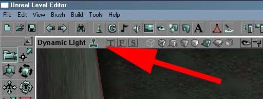
이 선택을 함으로써 에미터의 변경 사항이 실시간으로 업데이트 되어지는 것을 볼 수 있게 됩니다. 다음 단계로 진행하기 전에 에미터를 방의 중앙으로 드래그하여 파티클을 방출하기 시작할때 충분한 공간이 확보되어져 있게 하십시오.파티클 시스템 편집하기
에미터를 선택한 상태에서 UnrealEd의 Tools 메뉴에서 Particle Editor 를 선택하면 아래와 같은 창이 나타납니다. .
파티클 편집은 이 도구에서부터 모두 이루어집니다.
.
파티클 편집은 이 도구에서부터 모두 이루어집니다.
Sprite Emitter(스프라이트 에미터) 추가하기
본 매뉴얼의 개요에서 파티클 시스템은 Sprite Emitters (스프라이트 에미터)로 구성될 수 있다고 설명하였습니다. 그러기 위해 첫 번째 해야 할 일은 파티클 시스템에 스프라이트 에미터를 추가하는 것입니다. 스프라이트 에미터를 추가하려면, 파티클 편집기 상단에 위치한 도구 모음의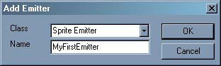
. 이렇게 함으로써 "MyFirstEmitter"로 명명된 새 스프라이트 에미터가 작성됩니다. Ok를 클릭한 후 아래와 같은 Particle System Editor가 나타납니다.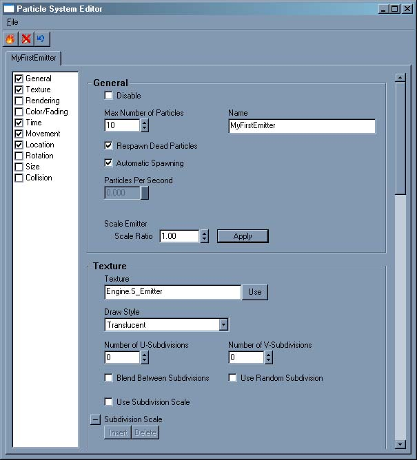
모든 것이 순조롭게 진행되었다면, 파티클 시스템이 고르지 못한 파티클을 방출하기 시작했을 것이고 그 모양은 아래의 그림과 같을 것입니다. .
.
파티클 이동 시키기
지금 현재까지 파티클 시스템은 별로 대단한 작동을 하지 않습니다. 좀 더 흥미로운 효과를 내기위한 첫 번째 단계는 파티클이 한 장소에 쌓이게 하는 대신에 이동하게 하는 것입니다. 그렇게 하기 위해서는 왼쪽 열에서 Movement 카테고리를 선택합니다. 오른쪽에 있는 대형 스크롤 영역이 Movement 헤드로 사라집니다. 아래와 같이 Start Velocity(시작 속도)의 값을 입력하면 파티클이 이동하기 시작합니다.
파티클 시스템 편집기에 있는 대부분의 설정과 마찬가지로 Start Velocity(시작 속도) 설정은 실시간으로 반영되어 파티클들을 변화시킵니다. 숫자 값을 입력하거나 필드 옆에 위치한 버튼을 클릭 및 드래그 해 값을 변경하면서 시스템이 변화하는 것을 지켜봅니다. 또한 각각의 값을 개별적으로 변화할 필요 없이 값들을 서로 "연결"할 수도 있습니다.
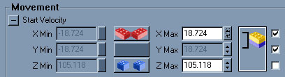
텍스처 선택하기
파티클 시스템을 변화시킬 수 있는 또 다른 주요 방법은 스프라이트가 사용할 텍스처를 변경하는 것입니다. 텍스처 브라우저에서 텍스처를 선택하고 난 후 Texture 카테고리 아래 Texture 필드에 위치한 Use (사용) 버튼을 클릭합니다.다양한 시도해 보기
시간을 가지고 사용 가능한 모든 속성을 시도해 보십시오. 처음에 모든 것을 전부 이해할 수 없을 수 있으나 대부분은 그 속성이 의미하는 바대로 실행합니다. 추가 설명을 필요할 시 언제든지 본 문서의 참조 섹션을 참고해 주십시오. Acceleration(가속도), Max Number Of Particles(최대 파티클 개수), Lifetime(지속시간), Fading(감추기), Start Location(시작 위치)는 모두 좋은 출발 위치입니다.파티클 편집기 인터페이스
에미터 추가하기
파티클 시스템에 에미터를 추가하려면 파티클 편집기의 상단 도구 모음에 위치한파티클 시스템의 이름을 지정과 함께 유형을 선택한 후 Ok 를 클릭합니다.
에미터 편집하기
카테고리
왼쪽 열은 주어진 에미터의 다양한 속성을 정리하는 카테고리 목록을 포함하고 있습니다. 이 카테고리를 클릭하면 해당 변수 세트로 스크롤됩니다. 박스를 체크 및 체크 해제하여 이러한 카테고리를 표시하거나 숨길 수 있습니다.
컨트롤
파티클 시스템에 사용되는 컨트롤에는 여러 유형이 있습니다. 거의 모든 컨트롤은 값을 입력하여 파티클 시스템이 변화하는 것을 볼 수 있는 필드를 가지고 있습니다. 일부 속성은 시스템 재부팅을 요구하지만 그 밖의 다른 속성들은 실시간으로 원활하게 업데이트 됩니다. 모든 숫자 필드 옆에는 "Scroll Buttons"(스크롤 버튼이)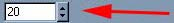
있습니다. 이 버튼을 사용하여 해당 텍스트 상자의 값을 쉽게 편집할 수 있습니다. 스크롤 버튼을 클릭한채로 유지하고 드래그하면 텍스트 상자안의 값이 위 아래로 순환됩니다. 또한 그냥 위 아래 버튼을 클릭하여 값을 증가 또는 감소 시킬 수 있습니다. 대부분의 컨트롤은 또한 도구를 숨기거나 표시하는데 사용되는 Hide/Expand(숨기기/확장하기) 버튼 일부 컨트롤에는 min(최소)와 max(최대) 값이 있습니다. 스크롤 버튼을 사용하여 벡터의 개별 구성 요소를 설정할 수 있는 것 이외에 Different/Same/Mirror(차이/동일/미러) 버튼을 클릭하여 변수의 최소 및 최대 값을 동시에 변경할 수 있습니다.
일부 컨트롤에는 min(최소)와 max(최대) 값이 있습니다. 스크롤 버튼을 사용하여 벡터의 개별 구성 요소를 설정할 수 있는 것 이외에 Different/Same/Mirror(차이/동일/미러) 버튼을 클릭하여 변수의 최소 및 최대 값을 동시에 변경할 수 있습니다. - 파란색과 빨간색 레고 블록은 최소값과 최대값을 서로 독립적으로 편집할 수 있음을 나타냅니다.
- 2개의 파란색 레고 블록은 최소 및 최대값이 동일하게 유지될 것을 나타냅니다.
- 2개의 빨간색 레고 블록은 최소값과 최대값이 미러화되는 것을 나타냅니다. 예를 들면, 최대값을 40.0으로 설정하면 자동적으로 최소값이 -40.0으로 설정되게 됩니다.
에미터 삭제하기
Delete Emitter(에미터 삭제) 버튼새로 고침
대부분의 파티클 시스템은 계속해서 진행할 수 있도록 디자인되지 않았습니다. 예를 들면, 화염 조명 또는 유리가 깨지는 것은 제대로 미리보기를 하려면 시스템을 재시작하여야 합니다. Refresh Button (새로고침 버튼)내보내기
게임내에서 파티클 시스템을 동적으로 스폰해야할 경우 스크립트를 만들어야 합니다. 또한 액터 브라우저에서 여러분의 파티클 시스템을 사용할 수 있게 스크립트를 작성해야할 필요가 있을 수 있습니다. 스크립트를 작성하려면 Export to Script (스크립트 내보내기) 버튼 작성할 패키지와 액터의 이름을 입력한 다음 Ok 를 클릭하여 스크립트 내보내기를 합니다. Auto Destroy (자동 파괴)를 체크하면 액터에 더 이상 파티클이 없을때 스스로 삭제되는 액터가 만들어집니다. 스크립트가 내보내기되어진 패키지가 작동되려거나 또는 편집기에서 표시되려면 다시 컴파일되어야 합니다.
작성할 패키지와 액터의 이름을 입력한 다음 Ok 를 클릭하여 스크립트 내보내기를 합니다. Auto Destroy (자동 파괴)를 체크하면 액터에 더 이상 파티클이 없을때 스스로 삭제되는 액터가 만들어집니다. 스크립트가 내보내기되어진 패키지가 작동되려거나 또는 편집기에서 표시되려면 다시 컴파일되어야 합니다.
에미터 복제하기
Duplicate Emitter (에미터 복제) 버튼에미터 저장/불러오기
Save Emitter (에미터 저장) 버튼도움말
UnrealEd 도구 모음 상단에 위치한 콘텍스 도움말 도구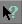
를 또한 사용할 수 있습니다. 이 버튼을 한 번 클릭한 다음 도구 제목을 클릭하면, 해당 도구 관련 도움말 섹션이 열려지게 됩니다.매개 변수 참조
본 문서의 참조 섹션은 Lode Vandevenne의 원저 에미터 튜토리얼에 많은 부분을 차용하고 있습니다.일반
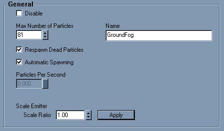
Disable(비활성화)
Disable(비활성화)가 선택되었을 경우 파티클 에미터는 작동하지 않습니다. 예를 들면 파티클 에이터의 설정을 기억해두고 싶다면 사용할 수 있으나 현재는 맵에서 사용하고 싶지 않은 경우입니다.Max Number of Particles(최대 파티클 수)
Max Number of Particles(최대 파티클 수) 설정은 해당 파티클 에미터의 화면에 표시될 수 있는 최대 파티클의 수를 지정합니다. 최대 수에 도달하면 오래된 파티클은 소멸되어 새로운 파티클이 스폰될 수 있게 됩니다. 이것을 0으로 설정하면 편집기가 크래시하게 됩니다. 예를 들면, 이 설정을 4로 지정하면 일단 워밍업 시간이 끝난 후 화면에 4개의 파티클이 존재하게 됩니다. 아래의 스크린샷에서 보시는 바와 같이 파티클들이 왼쪽으로 이동하고, 새로운 파티클이 오른쪽에 나타나면서 가장 왼쪽에 있는 파티클이 소멸됩니다.
특히 성능 향상을 위해 화면에 표시되는 파티클의 양을 줄이길 원할 경우 이 설정은 매우 중요합니다.
Name(이름)
이 매개 변수는 파티클 시스템의 이름을 지정합니다. 다음에 편집기를 로드할때 새 Name (이름)이 탭에 표시됩니다.Respawn Dead Particles(사멸 파티클 재스폰하기)
이 박스의 선택을 해제하면 사멸 파티클이 다시 스폰되지 않게 됩니다. 폭팔 또는 기타 다른 임시 효과를 제작하는 경우 이 박스가 체크되지 않게 하십시오.Automatic Spawning(자동 스폰)
Automatic Spawning(자동 스폰)을 사용하면 다른 파티클 시스템 속성에 Max Number of Particles(최대 파티클 수)와 동일한 파티클 수를 유지하게 됩니다. 예를 들면, 이 박스가 체크되고 Max Particles(최대 파티클 수)를 10으로 설정했다면 시스템이 워밍업한 후 시스템의 Lifetime(지속시간)에 관계없이 정확이 10개의 파티클이 항상 존재하게 됩니다. Automatic Spawning(자동 스폰)을 체크하면 스폰될 Particles Per Second(초당 파티클 수)를 직접 제어할 수 없게 됩니다.Particles Per Second(초당 파티클 수)
Automatic Spawning(자동 스폰)의 체크를 해제한 경우 방출될 파티클의 속도를 제어할 수 있게 됩니다. 어떤 경우에도 설정된 Max Particles(최대 파티클 수)보다 더 많은 파티클이 존재할 수 없다는 것에 유의하십시오.Scale Emitter(스케일 에미터)
이 도구는 편집기내의 여러 속성을 조절하여 에미터를 더 크게 또는 작게 만들 수 있게 합니다. 값을 선택한 다음 apply(적용) 버튼을 클릭하여 에미터의 크기를 조절하십시오.Texture(텍스처)

Texture Picker(텍스처 선택기)
텍스처 브라우저에서 텍스처를 선택한 다음 Use (사용) 버튼을 클릭하여 에미터에 선택한 텍스처를 사용하십시오.Draw Style(드로우 스타일)
Draw Style(드로우 스타일) 속성을 사용하여 텍스처가 맵에서 그려지는 방법을 변경할 수 있습니다. Draw Style for Particles(파티클에 대한 드로우 스타일)는 일반 액터 아래에 표시된 Draw Style과 어느 정도 비슷하지만 일부 추가된 옵션을 갖는 동시에 일부 다른 제거된 옵션을 가집니다. 아래의 예제 스크린샷에서의 파란색 텍스처는 알파 채널이 없는 경우이고, 두 번째는 다양한 색상과 16개 반점을 가진 알파 채널을 가진 텍스처입니다. Regular 는 텍스처를 불투명하게 만드므로 비투과 사각형이 됩니다.
Regular 는 텍스처를 불투명하게 만드므로 비투과 사각형이 됩니다.


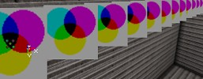
Alpha Blend 는 RGBA 텍스처 A 채널의 어두운 부분을 밝은 부분보다 더욱 더 투명하게 만듭니다. 검정색은 100% 투명(보이지 않음)하게 되고 백색은 100% 불투명하게 됩니다. 회색은 세미 반투명하게 됩니다. 이 효과는 아주 밝은 텍스처에는 시각적으로 좋아 보이지 않습니다.
 Modulated 는 텍스처를 일종의 역 반투명으로 만듭니다. 이 효과는 텍스처의 밝의 색상들을 어두운 색상들 보다 더 투명하게 만들어서 검정색은 불투명하게 되고 백색은 100% 투명하게(보이지 않음) 만듭니다. 회색, 빨강색, 파란색 등등은 세미 반투명하게 됩니다.
Modulated 는 텍스처를 일종의 역 반투명으로 만듭니다. 이 효과는 텍스처의 밝의 색상들을 어두운 색상들 보다 더 투명하게 만들어서 검정색은 불투명하게 되고 백색은 100% 투명하게(보이지 않음) 만듭니다. 회색, 빨강색, 파란색 등등은 세미 반투명하게 됩니다.

 Translucent 는 텍스처의 어두운 색상들을 밝은 색상들 보다 더 투명하게 만들어서 백색은 불투명하게 되고 검정색은 100% 투명하게(보이지 않음) 만듭니다. 회색, 빨강색, 파란색 등등은 세미 반투명하게 됩니다.
Translucent 는 텍스처의 어두운 색상들을 밝은 색상들 보다 더 투명하게 만들어서 백색은 불투명하게 되고 검정색은 100% 투명하게(보이지 않음) 만듭니다. 회색, 빨강색, 파란색 등등은 세미 반투명하게 됩니다.

 AlphaModulate 는 알파 채널이 상대적으로 더 어두운 곳에서 실제 RGB 텍스처를 더 밝게 만듭니다. 이 효과는 Alpha Blend 의 정반대적인 효과를 나타냅니다. 또한 이 효과는 아주 밝은 텍스처에는 시각적으로 좋아 보이지 않습니다.
AlphaModulate 는 알파 채널이 상대적으로 더 어두운 곳에서 실제 RGB 텍스처를 더 밝게 만듭니다. 이 효과는 Alpha Blend 의 정반대적인 효과를 나타냅니다. 또한 이 효과는 아주 밝은 텍스처에는 시각적으로 좋아 보이지 않습니다.

 Darken 은 텍스처 색상을 네거티브 및 반투명하게 만듭니다.
Darken 은 텍스처 색상을 네거티브 및 반투명하게 만듭니다.

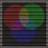
Brighten 은 텍스처의 배경을 밝게 만들어 원래 버전보다 반투명하고 더 밝은 텍스처로 만듭니다.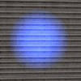
 보시다시피 RGBA8 텍스처의 알파 채널은 드로우 스타일 Alpha Blend 및 Alpha Modulate 에서만 사용됩니다.
보시다시피 RGBA8 텍스처의 알파 채널은 드로우 스타일 Alpha Blend 및 Alpha Modulate 에서만 사용됩니다.
Subdivisions(하위 분할)
1개의 텍스처를 각기 다른 여러 하위 분할로 나눌 수 있습니다. 파티클이 무작위로 텍스처 중 하나를 선택하게 만들거나 하나의 파티클이 한 특정 하위 분할에서 다른 하위 분할로 Lifetime(지속시간)동안 변화하도록 설정할 수 있습니다. 이런 목적으로 사용할 텍스처는 여러분께서 직접 만들어야 합니다. a * b의 결과와 동일한 수의 사각형으로 분할하여 각 사각형에 고유의 그림을 부여합니다. 예를 들면, 다음은 3 * 3 = 9 Subdivisions(하위 분할)로 나눌 수 있는 텍스처입니다. Subdivisions를 설정하려면 수평과 수직 Subdivisions에 각각 U-Subdivisions과 V-Subdivisions를 사용합니다.
이러한 설정을 0 또는 1로 설정하면 동일한 결과를 가져옵니다. 이러한 설정은 텍스처를 1개의 Subdivision(하위 분할)로 구분하므로, 즉 Subdivision이 없게 되므로(Subdivision은 텍스처 자체), 파티클은 아래의 그림과 같이 보이게 됩니다.
Subdivisions를 설정하려면 수평과 수직 Subdivisions에 각각 U-Subdivisions과 V-Subdivisions를 사용합니다.
이러한 설정을 0 또는 1로 설정하면 동일한 결과를 가져옵니다. 이러한 설정은 텍스처를 1개의 Subdivision(하위 분할)로 구분하므로, 즉 Subdivision이 없게 되므로(Subdivision은 텍스처 자체), 파티클은 아래의 그림과 같이 보이게 됩니다.
 U-Subdivisions와 V-Subdivisions 모두 3으로 설정하면 아래 그림과 같이 보이게 됩니다.
U-Subdivisions와 V-Subdivisions 모두 3으로 설정하면 아래 그림과 같이 보이게 됩니다.
 이들을 2 또는 4로 설정하면 이 텍스처의 일부 그림은 반으로 잘라지게 됩니다. 이것은 텍스처가 3 * 3 Subdivisions(하위 분할)을 가지고 있고, 이 값 이외의 다른 값으로 디자인되지 않았기 때문입니다.
이들을 2 또는 4로 설정하면 이 텍스처의 일부 그림은 반으로 잘라지게 됩니다. 이것은 텍스처가 3 * 3 Subdivisions(하위 분할)을 가지고 있고, 이 값 이외의 다른 값으로 디자인되지 않았기 때문입니다.

 각각 U-Subdivisions와 V-Subdivisions를 U-Subdivisions=1과 V-Subdivisions=3 또는 U-Subdivisions=3과 V-Subdivisions=1로 설정하면 아래의 그림과 같이 보이게 됩니다.
각각 U-Subdivisions와 V-Subdivisions를 U-Subdivisions=1과 V-Subdivisions=3 또는 U-Subdivisions=3과 V-Subdivisions=1로 설정하면 아래의 그림과 같이 보이게 됩니다.

 Use Random Subdivision(랜덤 하위 분할 사용) 박스를 체크하면 Emitter는 시작시 각 파티클에 임의의 Subdivision을 부여하고 파티클은 이 Subdivision을 파티클 지속시간 동안 유지하게 됩니다.
Use Random Subdivision(랜덤 하위 분할 사용) 박스를 체크하면 Emitter는 시작시 각 파티클에 임의의 Subdivision을 부여하고 파티클은 이 Subdivision을 파티클 지속시간 동안 유지하게 됩니다.
 Use Random Subdivision(하위 분할 사용) 상자를 체크하지 않으면 파티클은 Lifetime(지속시간) 동안 변화하게 됩니다. 예를 들어 2 * 2 Subdivisions(하위 분할)이 있다면 첫째 왼쪽 상단에 Subdivision이 만들어지고, 다음 왼쪽 하단에, 그런 다음 오른쪽 상단에, 그리고 최종적으로 오른쪽 하단에 Subdivision이 만들어지게 됩니다. 한 Subdivision에서 다른 Subdivision으로 변화하는 걸리는 시간은 파티클의 Lifetime(지속시간)에 따라 다릅니다. 이것에 관한 좀 더 자세한 내용은 Time 섹션에서 다뤄지겠습니다. 아래의 스크린샷에는 9개의 Subdivisions(하위 분할)이 있습니다.
Use Random Subdivision(하위 분할 사용) 상자를 체크하지 않으면 파티클은 Lifetime(지속시간) 동안 변화하게 됩니다. 예를 들어 2 * 2 Subdivisions(하위 분할)이 있다면 첫째 왼쪽 상단에 Subdivision이 만들어지고, 다음 왼쪽 하단에, 그런 다음 오른쪽 상단에, 그리고 최종적으로 오른쪽 하단에 Subdivision이 만들어지게 됩니다. 한 Subdivision에서 다른 Subdivision으로 변화하는 걸리는 시간은 파티클의 Lifetime(지속시간)에 따라 다릅니다. 이것에 관한 좀 더 자세한 내용은 Time 섹션에서 다뤄지겠습니다. 아래의 스크린샷에는 9개의 Subdivisions(하위 분할)이 있습니다.
 Blend Between Subdivision(하위 분할간에 블렌드)를 체크했으면(그리고 Use Random Subdivision(랜덤 하위 분할 사용)이 체크되지 않았으면), 파티클은 한 Subdivision에서 다른 Subdivision으로 Fade(사라짐)하게 됩니다.
Blend Between Subdivision(하위 분할간에 블렌드)를 체크했으면(그리고 Use Random Subdivision(랜덤 하위 분할 사용)이 체크되지 않았으면), 파티클은 한 Subdivision에서 다른 Subdivision으로 Fade(사라짐)하게 됩니다.
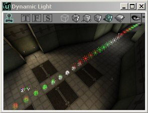
일반적으로 파티클은 이러한 방법으로 각기 다른 Subdivisions(하위 분할)를 거치며 모든 Subdivision(하위 분할)에서 동일한 시간을 유지하게 됩니다. 시간은 각 Subdivision(하위 분할)에 대해 동일하게 나뉘어집니다. 동일한 시간 분할을 원치 않는 경우 Subdivision Scale(하위 분할 스케일) 기능을 사용할 수 있습니다. 이를 위해서는 먼저 Use Subdivision Scale(하위 분할 스케일 사용) 박스를 체크해야 합니다. 그런 다음, Subdivision Scale 밑에 위치한 Insert (삽입) 버튼을 클릭하여 3개의 Subdivision Scales(하위 분할 스케일)을 만듭니다(그러면 9개의 Subdivisions(하위 분할) 중 4개가 사용됨). 9개의 Subdivisions(하위 분할)이 사용되길 원할경우 8개의 Subdivision Scales(하위 분할 스케일)을 만들어야 합니다. 8개 이하의 Subdivision Scales를 만들면 마지막 Subdivisions는 표시되지 않습니다. 또한 Subdivision Scales를 넉넉하게 만드는 것은 아무 문제도 초래하기 않습니다. 그저 마지막 Subdivision Scale을 무시하면 되기 때문입니다. Subdivision Scale은 파티클의 Lifetime(지속시간)과 상대적인 관계에 있으므로(이것에 관해선 Time 섹션 참조), 1.000000의 Subdivision Scale은 파티클의 Lifetime(지속시간)에 따라 그 시간이 결정됩니다. 각 Subdivision Scale은 파티클 Lifetime에서의 어느 특정 지점을 나타냅니다. 예를 들면, Lifetime이 4초인 경우 0.25의 Subdivision Scale은 Lifetime의 첫 1초의 끝 부분입니다. 연속적인 Subdivision Scale은 항상 그 값이 증가합니다. 증가하지 않는다면 시간으로 되돌려져서 그 하위 분할 스케일은 무시되어집니다. 예를 들어, Subdivision [0] = 0.1, [1] = 0.3, [2] = 0.6와 4초의 LifeTimeRange(지속시간 범위)인 경우, 파티클이 Subdivision 1을 0.4초, Subdivision 2를 0.8초, Subdivision 3을 1.2초, Subdivision 4를 나머지 1.6초 동안 표시되게 됩니다. 아래의 스크린샷에서 파티클은 왼쪽에서 오른쪽으로 이동합니다. Subdivision Scale [0] = 0.4 및 [1] = 1인 경우, 2개의 Subdivisions 중 1개만이 사용됩니다. 이런 경우 [2]에 어떤 값을 입력하여도 상관없게 됩니다.
Subdivision Scale [0] = 0.4 및 [1] = 1인 경우, 2개의 Subdivisions 중 1개만이 사용됩니다. 이런 경우 [2]에 어떤 값을 입력하여도 상관없게 됩니다.
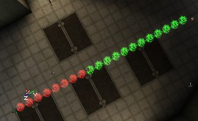
이 효과를 최대로 이용하려면 올바른 LifeTimeRange를 사용해야 하고 또한 Number of Particles(파티클 수)가 충분히 높은 값으로 설정되었나를 확인해야 합니다. 이것에 관해 일반 및 시간 섹션을 참조해 주십시오. 텍스처의 Subdivisions 중 일부만 사용하고 싶은 경우 Subdivision End(하위 분할 종료)와 Subdivision Start(하위 분할 시작) 값을 사용하십시오. Subdivision 0은 텍스처의 왼쪽 상단 코너에 위치한 Subdivision이고, Subdivision 1은 그 밑에, 그리고 마지막 하위 분할은 텍스처 오른쪽 하단 코너에 위치합니다. 아래의 그림에서 하위 분할 번호를 볼 수 있습니다.
Custom Texture Set(사용자 지정 텍스처 세트)
이 옵션은 에미터 유형이 메쉬 에미터인 경우에만 표시됩니다. 이것은 선택된 메쉬에 표준 텍스처 대신에 사용하는 각기 다른 세트의 텍스처입니다. 메쉬 에미터에 관한 자세한 내용은 메쉬를 참조해 주십시오.렌더링

Disable Fogging(안개 해제)
이 옵션이 선택되면 파티클에 대한 안개가 해제되므로, 먼 안개를 통해 파티클을 볼 수 있습니다.Alpha Test/Alpha Ref
이 옵션이 선택되면 비디오 하드웨어는 Alpha Ref의 알파 값을 이미 축적한 픽섹을 작성하지 않습니다.Z-Test
에미터에 대한 기본 및 노멀 패턴은 이 박스가 체크되었을때 입니다. 이 박스의 체크를 해제하면 에미터가 거의 모든 것 위에서 그립니다. Z-test 체크 해제된 에미터 또는 다른 알파 채널 객체 위에는 그려지지 않을 수 있습니다.Z-Write
이것은 파티클이 Z-buffer에 작성하게 합니다. ("그래픽 카드에서 이 섹션의 비디오 메모리는 어느 온스크린 요소가 표시되고 어느 요소가 다른 객체 뒤에 숨겨지는 여부를 기억합니다." - CNET 용어집)Color/Fading(색상/페이드)
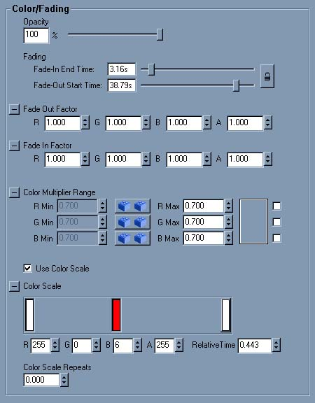
Opacity(불투명도)
이 유틸리티 도구는 전체 에미터의 반투명도를 조절합니다. 이것은 Color/Fading 카테고리에 있는 여러 속성을 변경합니다.Fading(페이드)
이 옵션으로 파티클을 페이드 인 또는 페이드 아웃 시킬 수 있습니다. 예를 들면, 파티클들이 페이드 인할때 처음에는 보이지 않다가 점점 보이게 됩니다. 또한, 컬러 채널의 일부만 페이드 시킬 수 있습니다. 예를 들면, 텍스처의 빨강색과 녹색 부분만 보이지 않게 하면서 파란색 부분만 항상 보이게 할 수 있습니다. 파티클 에미터를 페이드 인 시킬려면 Fade-In End Time (페이드 인 종료 시간) 슬라이더를 왼쪽에서 오른쪽으로 드래그 하십시오. 스크린샷에서 파티클은 5.0의 Lifetime(지속시간) 및 5.0의 Fade In End Time(페이드 인 종료 시간)으로 설정되었습니다. 그러므로, 파티클 소멸시 100% 보여집니다. Fade-Out Start Time (페이드 아웃 시작 시간)은 Fade-In End Time 과 동일하게 작동합니다. 이것의 설정이 0(슬라이더가 맨 왼쪽인 경우)이면 파티클이 생성되자마자 페이드를 시작해서 소멸되는 순간에는 완전히 Faded out(페이드 아웃)합니다. 아래의 스크린샷에서 Fade-Out Start Time 은 1입니다.
Fade-Out Start Time (페이드 아웃 시작 시간)은 Fade-In End Time 과 동일하게 작동합니다. 이것의 설정이 0(슬라이더가 맨 왼쪽인 경우)이면 파티클이 생성되자마자 페이드를 시작해서 소멸되는 순간에는 완전히 Faded out(페이드 아웃)합니다. 아래의 스크린샷에서 Fade-Out Start Time 은 1입니다.

Fade Out/In Factor(페이드 인/아웃 요소)
Fade In Factor (페이드 인 요소)와 Fade Out Factor (페이드 아웃 요소)를 사용하여 개별 컬러 채널을 페이드 시킬 수 있습니다. 이 두 값이 1인 경우 파티클은 정상적으로 페이드합니다. 예를 들어, R = 0으로 설정하면 빨강 채널은 0% 변경되어 다른 색상은 보이지 않게 되지만(페이드 인 시작 또는 페이드 아웃 종료시) 빨강은 여전히 보이게 됩니다(첫 번째 스크린의 왼쪽 부분). 또는 G = 0인 경우 녹색은 표시된 상태로 유지됩니다(첫 번째 스크린의 오른쪽 부분). R과 G가 0이면 빨강과 녹색은 모두 표시되며, 여기에서는 약간 노란색 계열의 색조를 띠게 됩니다(두 번째 스크린의 왼쪽 부분). R, G, B가 5인 경우, 텍스트 전체가 완전히 표시되지 않기 때문에 페이드 아웃이 더욱 더 빨라집니다(두 번째 스크린의 오른쪽 부분). R, G, B가 모두 0인 경우 텍스처는 전혀 숨길 수 없게 됩니다.

Color Multiplier Range(컬러 승수 범위)
Color Multiplier Range (컬러 승수 범위)는 각 파티클의 지속시간이 시작할때 파티클에 개별적으로 적용되는 승수입니다. 이것은 주로 2가지 용도로 사용될 수 있습니다. 첫째는 파티클에 임의의 색상 변화를 주기위해서이고, 둘째는 텍스처 또는 컬러 스케일을 변경하지 않고 에미터의 색상을 조절하는데 사용됩니다. 파티클에 경미한 임의의 색상을 부여하려면 필드의 최소 및 최대값을 각기 다른 값으로 설정합니다. 이 두 값의 범위가 클수록 색상 변화가 더 커집니다. 에미터의 색상을 조절하려면, R, G, 또는 B의 값을 변경하여 에미터의 빨강, 초록, 또는 파랑색의 비율을 줄이십시오.Use Color Scale(컬러 스케일 사용)
이것은 컬러 스케일 및 컬러 스케일 반복의 사용을 활성화합니다(아래 참조).Color Scale(컬러 스케일)
이것은 파티클에 적용할 수 있는 또 하나의 스케일입니다. 보통 스케일은 파티클의 지속시간 동안 파티클의 무언가를 변경합니다. 이 경우에는 색상이 변경됩니다. 컬러 스케일을 사용하려면 첫째 "Use Color Scale"(컬러 스케일 사용)을 True로 설정하고 난 다음 새 컬러 막대를 추가합니다. 새로운 컬러 막대를 추가하려면 컬러 스케일 박스안의 아무 곳이나 마우스로 더블 클릭합니다. 색상을 선택할 수 있는 컬러 픽커 창이 나타나게 되고, 그런 다음 OK를 클릭합니다. 클릭 후, 더블 클릭하여 선택한 색상이 수직 막대에 나타납니다. 선택한 색상을 더블 클릭하여 컬러 픽커 창이 나타나게 하거나 색상을 마우스로 한 번 클릭한 다음 수동으로 R, G, B, A 값을 조절하여 색상을 변경할 수 있습니다. 컬러 픽커는 알파 값을 지원하지 않기에 알파 값(알파 블렌드 모드에서만 사용됨)은 반드시 수동으로 변경되야 합니다. 컬러 막대에 있는 색상은 텍스처의 색상과 합쳐지기 때문에 텍스처가 푸른색을 띠거나 컬러 막대가 흰색이면 파티클도 역시 푸르스름한 색으로 보일 것입니다. 반면에 컬러 막대가 청록색이면, 파티클은 청록색에 가까운 색을 띠지만 컬러 막대처럼 진한 청록색으로 보이지 않습니다. 컬러 막대의 색상이 백색의 텍스처에서 가장 잘 표현되기 때문에 백색의 텍스처가 일반적으로 컬러 스케일과 가장 잘 서로 조화를 이룹니다.
컬러 막대의 위치는 해당 색상의 상대적 시간을 나타냅니다. 파티클의 지속시간 관점에서 볼 때, 이것은 즉 파티클이 선택한 색상이 될때까지의 시간을 나타냅니다. 컬러 막대가 컬러 스케일의 중간에 있다면 이 값은 0.5 전후가 될 것입니다. 파티클의 지속시간이 4.0초면 선택한 색상이 될때까지 2.0초 파티클의 지속시간이 사용됩니다. 상대적 시간은 컬러 막대를 드래그 하거나 수동으로 Color Scale 박스 밑에 위치한 relative time(상대적 시간) 필드를 조절하여 변경시킬 수 있습니다.
컬러 스케일은 2개 이상의 컬러 막대가 있을때 가장 유용합니다. Color Scale 박스의 맨 오른쪽에 컬러 막대가 없는 경우 파티클의 색상은 맨 오른쪽 컬러 막대 이후 정상적인 색상을 나타냅니다. 이것은 일반적으로 바람직하지 못한 경우입니다. Color Scale 박스 맨 왼쪽에 컬러 막대가 없는 경우 시스템은 백색 막대가 있는 것 처럼 작동합니다. 다음은 백색 텍스처와 3개의 컬러 막대가 사용된 경우의 예제입니다. 중앙에 위치한 컬러 막대가 선택되었으므로 해당 컬러 막대에 해당하는 필드 값이 표시됩니다.
선택한 색상을 더블 클릭하여 컬러 픽커 창이 나타나게 하거나 색상을 마우스로 한 번 클릭한 다음 수동으로 R, G, B, A 값을 조절하여 색상을 변경할 수 있습니다. 컬러 픽커는 알파 값을 지원하지 않기에 알파 값(알파 블렌드 모드에서만 사용됨)은 반드시 수동으로 변경되야 합니다. 컬러 막대에 있는 색상은 텍스처의 색상과 합쳐지기 때문에 텍스처가 푸른색을 띠거나 컬러 막대가 흰색이면 파티클도 역시 푸르스름한 색으로 보일 것입니다. 반면에 컬러 막대가 청록색이면, 파티클은 청록색에 가까운 색을 띠지만 컬러 막대처럼 진한 청록색으로 보이지 않습니다. 컬러 막대의 색상이 백색의 텍스처에서 가장 잘 표현되기 때문에 백색의 텍스처가 일반적으로 컬러 스케일과 가장 잘 서로 조화를 이룹니다.
컬러 막대의 위치는 해당 색상의 상대적 시간을 나타냅니다. 파티클의 지속시간 관점에서 볼 때, 이것은 즉 파티클이 선택한 색상이 될때까지의 시간을 나타냅니다. 컬러 막대가 컬러 스케일의 중간에 있다면 이 값은 0.5 전후가 될 것입니다. 파티클의 지속시간이 4.0초면 선택한 색상이 될때까지 2.0초 파티클의 지속시간이 사용됩니다. 상대적 시간은 컬러 막대를 드래그 하거나 수동으로 Color Scale 박스 밑에 위치한 relative time(상대적 시간) 필드를 조절하여 변경시킬 수 있습니다.
컬러 스케일은 2개 이상의 컬러 막대가 있을때 가장 유용합니다. Color Scale 박스의 맨 오른쪽에 컬러 막대가 없는 경우 파티클의 색상은 맨 오른쪽 컬러 막대 이후 정상적인 색상을 나타냅니다. 이것은 일반적으로 바람직하지 못한 경우입니다. Color Scale 박스 맨 왼쪽에 컬러 막대가 없는 경우 시스템은 백색 막대가 있는 것 처럼 작동합니다. 다음은 백색 텍스처와 3개의 컬러 막대가 사용된 경우의 예제입니다. 중앙에 위치한 컬러 막대가 선택되었으므로 해당 컬러 막대에 해당하는 필드 값이 표시됩니다.

Color Scale Repeats(컬러 스케일 반복 횟수)
"Color Scale Repeats"을 사용하여 Color Scale 과정을 원하는 만큼 반복할 수 있습니다. 기본값은 0이고, 이는 즉 컬러 스케일 작업은 1번만 작동하고 여러번 반복되지 않는다는 것을 의미합니다. 이 값을 1.0으로 설정하면 일반 컬러 스케일 및 반복에 대한 2개의 스케일이 나타납니다. 이 스케일은 위의 것과 동일한 컬러 스케일이지만 "Color Scale Repeats"가 1.0으로 설정되어 있습니다. 다음은 컬러 스케일의 반복이 2.5로 설정되어있는 경우의 그림입니다. 컬러 스케일 중앙에 위치한 녹색이 어떻게 종료하는가를 주의깊게 살펴보십시오.
다음은 컬러 스케일의 반복이 2.5로 설정되어있는 경우의 그림입니다. 컬러 스케일 중앙에 위치한 녹색이 어떻게 종료하는가를 주의깊게 살펴보십시오.

Time(시간)
 #Lifetime
#Lifetime
Lifetime(지속시간)
Lifetime은 파티클이 존재하는 시간을 초 단위로 표현한 것입니다. 지속시간 종료 후 파티클은 파괴된 후 다시 스폰될 수 있습니다.Initial Time(초기 시간)
_Initial Time_ 은 이미 몇 초 경과된 파티클이 스폰되어지게 합니다. Lifetime이 4이고 _Initial Time_ 이 3이면 이미 3초 경과된 파티클이 스폰되어지고, 그 해당 파티클은 1초밖에 존재하지 못하게 됩니다. 이 설정은 스케일 사용시 흥미로운 효과를 얻게할 수 있습니다. Subdivision Scale, Color Scale, SizeScale도 이미 파티클이 3초 경과한 것으로 해서 계산되어집니다.Initial Delay(초기 지연)
Initial Delay 는 에미터가 작업을 시작하기까지 걸리는 시간입니다. 예를 들면, Initial Delay 값으로 5를 입력한 경우 맵을 시작하거나 [[#Refreshing][새로 고침]을 클릭하면 방출을 시작하기전까지 5초 동안 아무것도 하지 않습니다. 모든 설정에 Min과 Max 값을 사용할 수 있습니다. 이 두 값을 동일하게 만들면 정확한 값이 사용됩니다. Min 값을 Max 값 보다 작게 설정하면 각 파티클은 스폰될때 임의의 LifeTimeRange 또는 InitialTimeRange(초기 시간 범위)를 갖게 됩니다. 이러한 임의의 값은 Min과 Max 사이에 존재하게 됩니다. 임의의 LifeTime을 사용하면 파티클은 아래의 스크린샷처럼 일정한 속도로 보이게 됩니다. 다른 파티클이 계속해서 진행하는 동안 일부 파티클은 소멸되기 때문에 구멍이 있는 것처럼 보입니다.
Seconds Before Inactive(비활성화되기 전까지의 시간(초))
이 값이 0.000000이면 파티클이 보기(뷰)에서 벗어나도 파티클의 이동은 항상 컴퓨터에 의해 계산되어집니다. 여기에 값을 입력하면 Emitter 액터가 입력한 시간(초) 동안 보기(뷰)에서 벗어난 후 파티클의 이동 계산을 중지합니다. 이러한 방식으로 성능이 향상됩니다. Emitter에서 눈을 돌리면 파티클은 움직임이 정지되고, 다시 쳐다볼때에만 파티클이 다시 움직이기 시작합니다. _Seconds Before Inactive_= 0.010000이면 다음 그림과 같습니다. 그런 다음 카메라를 180도 회전시켜 1시간을 기다린 후 다시 Emitter를 향해 쳐다보면 동일한 이미지(워밍업이 아직 종료되지 않은)를 볼 수 있습니다. Emitter 액터를 볼 수 없지만 일부 파티클을 볼 수 있을때에는 이러한 파티클을 볼 수 없게 됩니다! Emitter 자체를 볼 수 있을때에만 그 파티클을 볼 수 있게 됩니다. 이러한 상황을 피하려면 Seconds Before Inactive 를 0.000000으로 설정하십시오.
그런 다음 카메라를 180도 회전시켜 1시간을 기다린 후 다시 Emitter를 향해 쳐다보면 동일한 이미지(워밍업이 아직 종료되지 않은)를 볼 수 있습니다. Emitter 액터를 볼 수 없지만 일부 파티클을 볼 수 있을때에는 이러한 파티클을 볼 수 없게 됩니다! Emitter 자체를 볼 수 있을때에만 그 파티클을 볼 수 있게 됩니다. 이러한 상황을 피하려면 Seconds Before Inactive 를 0.000000으로 설정하십시오.
Relative Warmup Time/Warmup Ticks Per Second(상대적 워밍업 시간/1초당 워밍업 틱)
엔진이 에미터를 미리 산정하게 할 수 있습니다. 그래서 맵을 시작할때 파티클 에미터가 이미 몇 초 동안 거기에 있는 것 같은 상태가 되어 워밍업 효과가 나타나지 않게 됩니다. 워밍업은 모든 파티클이 아직 스폰되지 않은 시간입니다. Relative Warmup Time 을 사용하여 파티클의 Lifetime에 따라 미리 산정해야 하는 시간(초)을 설정할 수 있습니다. 이는 즉, 이것을 1로 설정하면 첫 번째 파티클이 존재하는 시간(초) 만큼 미리 산정되어집니다. 그러나 이것이 작동하려면 WarmupTicksPerSecond을 설정해야 합니다. 이것은 RelativeWarmupTime당의 틱 수를 나타냅니다. Warmup Ticks Per Second 값이 클수록 미리 산정되는 값이 커집니다. 간단히 말하면, 시각적 워밍업이 없게 하려면 특정 파티클 에미터의 Relative Warmup Time 이 클수록 Warmup Ticks Per Second 값을 높게 설정해야 합니다(Relative Warmup Time 을 1로 설정).Movement(이동)

Start Velocity(시작 속도)
Start Velocity 를 사용하여 파타클에 일정한 속도를 부여합니다. X, Y, Z 값은 각각의 방향으로 이동하는 파티클의 속도를 조절합니다. Min과 Max가 동일한 경우 파티클은 입력시 사용된 방향으로 일정한 속도로 이동하게 됩니다. Min < Max인 경우 Min과 Max 사이의 값인 일정 속도록 임의로 움직이게 됩니다. 예를 들면, X-Min을 X-Max와 동일하게, Y-Min을 Y-Max 동일하게, Z-Min을 Z-Man와 동일하게 설정하면(가속도는 0으로 설정) 모든 파티클은 동일한 방향으로 이동하게 됩니다.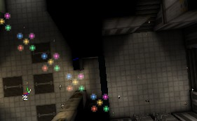
그러나 X-Min을 -500, X-Max을 +500(Y 값은 동일하게 유지)으로 설정하면 파티클은 임의의 방향으로 이동하게 됩니다. 만약 X-Min = -150 및 X-Max = +150으로 설정했으면 방향의 임의성이 줄어들게 됩니다.
만약 X-Min = -150 및 X-Max = +150으로 설정했으면 방향의 임의성이 줄어들게 됩니다.

Acceleration(가속도)
파티클을 이동시키기 위해서 Velocity 및/또는 Acceleration을 부여할 수 있습니다. Acceleration은 파티클의 이동을 점점 빨라지게 하는 것으로써 아주 간단하게 설정할 수 있습니다. Emitter의 속성을 열고 거기에서 Sprite Emitter 의 속성을 엽니다. 그런 다음, 거기서 Acceleration을 확장합니다. X, Y, Z 축에 따른 원하는 Acceleration 정도를 입력할 수 있습니다. 마이너스 값도 또한 입력할 수 있습니다. Top View의 윗 부분이 북쪽이라고 가정하면 다음과 같이 설정할 수 있습니다.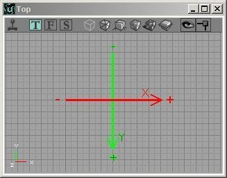
X > 0이면 파티클은 동쪽으로 이동합니다. X < 0이면 서쪽으로 이동합니다. Y > 0이면 남쪽으로 이동합니다. Y < 0이면 북쪽으로 이동합니다. Z > 0이면 천장이나 공중으로 이동합니다. Z < 0이면 지상으로 이동합니다. 총 가속도는 이러한 3가지 구성 요소의 합계입니다. 그러므로 X = 425, Y = -950, Z = -950이면 파티클은 북동쪽 아래로 이동합니다. 이 때, 동쪽보다 북쪽으로 더 큰 가속도가 주어집니다. 그러나 Emitter 액터를 Rotation 도구를 가지고 회전시키면 CoordinateSystem(좌표 시스템)도 회전하기 때문에 이 가속도는 더 이상 정확해지지 않습니다. 이 경우 Advanced에서 bDirectional을 True로 설정한 경우 X 축은 화살표 방향입니다. 얼마 정도의 가속도를 부여하면 파티클이 이동하는 것을 볼 수 있습니다. Acceleration 을 사용하면 파티클이 매 초마다 점점 빠르게 이동하게 되지만 Start Velocity는 일정한 속도입니다. Acceleration 이 사용되지 않았지만 Velocity가 설정되어 있는 경우 파티클은 존재하는 동안 일정 속도로 이동하게 됩니다. Velocity와 Acceleration 을 모두 사용하는 경우 파티클의 전체 속도는 고정 Velocity와 Acceleration에 의해 발생되는 가변 속도의 합입니다. Velocity와 Acceleration이 동일한 축으로 적용되지만 반대 부호를 가진 경우 파티클은 일단 한 방향으로 이동하게 되지만 Acceleration에 의해 유발되는 속도의 절대 값이 Velocity의 절대 값보다 큰 지점에서 파티클은 본래 방향으로 다시 돌아가게 됩니다. 각기 다른 축으로 적용된 Velocity와 Acceleration을 사용하는 경우 파티클은 포물선 모양으로 이동하게 됩니다. 포물선은 총알이나 물건을 던진 경우 그려지게 되는 현실적인 궤적입니다. 예를 들어, Acceleration의 Z = -950이고 Start Velocity 의 X-Min = 500 및 X-Max = 500인 경우 다음과 같이 표시됩니다.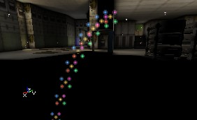
여기서 Acceleration 의 X를 -1000으로 설정하면 다음과 같이 표시됩니다.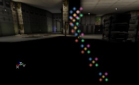
Max Velocity(최대 속도)
Acceleration과 Velocity에 발생하는 속도의 합이 Absolute Velocity(절대 속도)이고 각 축에 대해 Max Velocity 값을 설정할 수 있습니다. 최대 속도를 지정하면 Max Velocity 속도에 도달할때까지 Acceleration은 파티클을 계속 가속시킵니다. 최대 속도에 도달하면 파티클은 일정 속도를 유지하게 됩니다. 첫 번째 포물선 예제에서 Max Velocity 의 Z 값을 600으로 설정하면 처음에 함수는 포물선을 나타내다가 Z 축에 따른 속도의 절대값이 600에 도달하면 일정 함수(선)가 됩니다.
Velocity Loss(속도 손실)
Velocity Loss 설정은 선택한 축을 따라 이동하는 파티클의 움직임을 지연시킵니다(X = Y = Z로 설정하면 어느 방향으로 이동하는지에 상관없이 파티클의 속도를 감속시킴). 이것은 마찰 또는 공기 저항과 같은 방식으로 작동합니다. 100보다 더 큰 값으로 설정되면 파티클은 급격하게 매우 빠른 속도로 방출되 버립니다. Velocity Loss 의 값을 Min과 Max 값 사이의 어떤 임의의 값으로 설정하고 싶다면 Min과 Max 값을 사용할 수 있습니다.Add Velocity From Other Emitter(다른 에미터에서부터 속도 추가하기)
Add Velocity From Other Emitter 는 동일한 Emitter 액터내의 다른 파티클 에미터에서부터 나오는 임의의 파티클과 같은 Velocity를 파티클에 부여합니다. 이 설정은 Location(위치)에서의 [[#AddLocationFromOtherEmitter][Add Location From Other Emitter](다른 에미터에서부터 위치 추가하기)와 매우 유사한 방법으로 작동합니다.Add Velocity Multiplier(속도 승수 추가하기)
Add Velocity From Other Emitter가 None 으로 설정되어 있지 않는 경우 파티클의 속도에 이 값이 곱해집니다. 예를 들어, 이 에미터에서부터의 파티클이 다른 에미터에서부터의 파티클 보다 2배의 속도를 갖길 원한다면 이 도구의 모든 값을 2.0으로 설정할 수 있습니다.Get Velocity Direction From(속도 방향 가져오기)
Get Velocity Direction From 을 선택하여 Velocity를 어느 방향으로 적용할지를 선택할 수 있습니다. None은 기본값으로 위에서 설명한대로 작동합니다. Start Position And Owner (시작 위치 및 소유자)를 사용하면 파티클은 그 시작 위치에서 결정된 방향으로 이동하게 되고 에미터 액터는 에미터에서 떨어져 이동하게 됩니다. Owner and Start Position (소유자 및 시작 위치)도 동일한 일을 수행하지만 파티클은 그 시작 위치에서 에미터 액터로 향해 이동하게 되고, 도달해서도 계속해서 더 멀리 이동하게 됩니다. 이 설정은 시작 위치가 에미터 자체가 아닌 경우에만 작동합니다. 좀 더 자세한 내용은 Location을 참조해 주십시오. (게재 예정)Coordinate System(좌표 시스템)
CoordinateSystem은 파티클의 Location에 대한 X, Y, Z 값의 의미를 정의합니다. CoordinateSystem을 PTCS_Relative로 설정하면 파티클의 (X,Y,Z) = (0,0,0) 위치가 편집기에서의 Emitter 액터의 위치이기에 파티클은 그곳에 스폰되게 됩니다. 그러나 CoordinateSystem을 PTCS_Absolute로 설정하면 편집기의 월드 CoordinateSystem이 사용되고, 거기서의 (0,0,0) Location은 정확히 월드의 중앙입니다(2D 뷰에서 다른 곳보다 그리드 선이 조금 진하게 칠해져 있습니다). 따라서 Emitter 액터가 어디에 있던지 파티클은 맵의 중앙(2D 뷰의 굵은 그리드 선이 교차하는 곳)에서 시작됩니다. 에미터 액터가 스크린샷의 오른쪽에 있는 것에 주의하십시오.
그러나 CoordinateSystem을 PTCS_Absolute로 설정하면 편집기의 월드 CoordinateSystem이 사용되고, 거기서의 (0,0,0) Location은 정확히 월드의 중앙입니다(2D 뷰에서 다른 곳보다 그리드 선이 조금 진하게 칠해져 있습니다). 따라서 Emitter 액터가 어디에 있던지 파티클은 맵의 중앙(2D 뷰의 굵은 그리드 선이 교차하는 곳)에서 시작됩니다. 에미터 액터가 스크린샷의 오른쪽에 있는 것에 주의하십시오.
 기본 CoordinateSystem PTCS_Independent는 PTCS_Relative와 동일한 일을 수행하지만 스폰되고 난 후 파티클은 독립적이 되고 절대 좌표 시스템을 사용하게 됩니다. PTCS_Relative와 PTCS_Independent의 차이점은 이동하는 에미터를 사용할때 중요합니다.
회전 도구를 사용하여 에미터를 회전하는 경우 이 3개의 CoordinateSystem들은 모두 회전하게 됩니다. 에미터 액터의 속성에서 Advanced bDirectional을 True로 설정하면 보다 더 잘 회전시킬 수 있게 편집기에서 화살표가 표시됩니다.
Location 섹션에서 다른 위치에 파티클을 스폰시키는 방법에 대해 설명합니다. 에미터 액터에 대해 상대적 또는 절대적 위치는 사용되는 CoordinateSystem에 따릅니다.
기본 CoordinateSystem PTCS_Independent는 PTCS_Relative와 동일한 일을 수행하지만 스폰되고 난 후 파티클은 독립적이 되고 절대 좌표 시스템을 사용하게 됩니다. PTCS_Relative와 PTCS_Independent의 차이점은 이동하는 에미터를 사용할때 중요합니다.
회전 도구를 사용하여 에미터를 회전하는 경우 이 3개의 CoordinateSystem들은 모두 회전하게 됩니다. 에미터 액터의 속성에서 Advanced bDirectional을 True로 설정하면 보다 더 잘 회전시킬 수 있게 편집기에서 화살표가 표시됩니다.
Location 섹션에서 다른 위치에 파티클을 스폰시키는 방법에 대해 설명합니다. 에미터 액터에 대해 상대적 또는 절대적 위치는 사용되는 CoordinateSystem에 따릅니다.
Min Squared Velocity(최소 제곱 속도)
이것은 파티클이 비활성화되기 전에 가질 수 있는 최소 속도를 제어합니다. 이것은 파티클이 벽에 부딪쳐 튀어오를 때마다 속도가 줄어들게 되는 [[#CollisioN][Collision](충돌) 사용시 중요합니다.Use Velocity Scale(속도 스케일 사용)
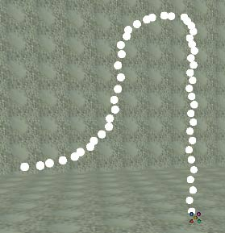
UseVelocityScale 은 속도 스케일을 설정하거나 해제합니다. 속도 스케일은 파티클의 속도를 시간에 걸쳐 조절하는데 사용됩니다. 속도 스케일인 구성 요소 스케일이기 때문에 시간 경과에 따라 파티클의 방향을 변화시키고 심지어 방향을 반대로 전환시키는데 사용될 수 있습니다.Velocity Scale(속도 스케일)
Velocity Scale 을 사용하면 파티클의 지속시간 동안에 파티클의 속도를 조절할 수 있습니다. 이것을 사용하여 파티클의 이동을 중지시키고, 그런 다음 다시 시작하게할 수 있습니다. 또한, 한 입력 항목에 X 스케일을 0.0, Y 스케일을 1.0으로 설정하고, 그런 다음 다른 입력 항목에 X 스케일을 1.0, Y 스케일을 0.0으로 설정하여 파티클의 방향을 변경하는데 사용할 수 있습니다. Relative Velocity (상대적 속도)는 파티클의 현재 속도 승수이고 Relative Time (상대적 시간)은 승수에 적용될 시간입니다. 모든 스케일뿐만 아니라 Velocity Scale 의 입력 항목은도 그 사이에 보간되어집니다.Velocity Scale Repeats(속도 스케일 반복 횟수)
Velocity Scale Repeats 는 Velocity Scale 이 반복되는 횟수입니다. 이것을 0으로 설정하면 속도 스케일은 1번만 발생합니다. 이것을 1으로 설정하면 속도 스케일은 2번 발생합니다.Location(위치)

Start Location Shape(시작 위치 형상)
이것은 파티클이 스폰되어지는 곳의 전체 모양을 결정합니다. Box (박스)를 선택하면 Start Location 에서 지정된 변수를 사용하여 지정된 Box 에 모든 파티클을 스폰하게 됩니다. 예를 들어, X, Y, Z(Min)를 -150, X, Y, Z(Max)를 +150으로 설정하면 모든 파티클은 300*300*300 박스 안에서 시작됩니다.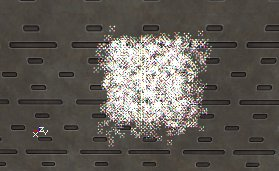
Sphere (구체)를 선택하면 Sphere Radius (구체 반경) 내의 값과 동일한 반경을 가진 구체 안에 파티클을 스폰하는 것이 가능합니다.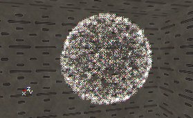
Polor (극)에서는 좀 복잡해지지만 Start Location Polar Range (시작 위치 극 범위)에서의 X, Y, Z 변수를 사용하고 세타, 파이(phi), r 을 표준 극 방정식에 사용합니다. 이것은 기본적으로 반경 r 을 가진 움푹 들어간 부분 구체를 만듭니다. 이것은 경도측에서 세타 각도, 위도측에서 파이 각도를 사용합니다.Start Location Offset(시작 위치 오프셋)
Start Location Shape의 설정은 Location Offset (위치 오프셋)과 함께 작동하여, 결과적으로 최종 Start Location은 이 두 값의 합입니다. 이렇게 함으로써 파티클이 스폰되는 영역이 에미터의 중앙에 집중되지 않게 됩니다.Add Location From Other Emitter(다른 에미터에서부터 위치를 추가하기)
Add Location From Other Emitter에서 동일한 Emitter 액터내에 있는 다른 파티클 에미터를 선택할 수 있습니다. 이것을 None 이외의 다른 것으로 설정하면 파티클은 보통 스폰되어져야 하는 위치에서 스폰되지 않고 선택한 파티클 에미터의 파티클 중 한 파티클의 위치에서 스폰되어집니다. 다른 파티클들은 계속해서 이 스폰된 파티클을 따라 스폰되어지지 않고, 그 위치에서 스폰되어진 후 독립적으로 다른 위치에서 스폰되어집니다. 예를 들어, 다른 이동하는 파티클 뒤의 파티클들을 추적할 수 있습니다. 이것은 다음 데모 파티클 예제 맵에서 실행되고 있습니다. 파란색 스프라이트는 전혀 움직이지 않지만 소멸될때에는 튀어나오는 공 중 하나에 다시 스폰되므로 파란색 스프라이트는 모두 하나가 되어 공을 따르는 추적 모양을 형성하게 됩니다.
파란색 스프라이트는 전혀 움직이지 않지만 소멸될때에는 튀어나오는 공 중 하나에 다시 스폰되므로 파란색 스프라이트는 모두 하나가 되어 공을 따르는 추적 모양을 형성하게 됩니다.
Mesh Spawning(메쉬 스폰)
 Mesh Spawning은 정적 메쉬의 정점(vertices)을 사용하여 스폰 위치를 계산하고 옵션으로 에미터에서의 파티클 속도 및 색상도 계산합니다. 정적 메쉬는 월드에서 존재할 필요도 없고 정적 메쉬의 면도 그리 중요하지 않습니다. 이는 즉 모델링 프로그램에서 정적 메쉬의 임의의 모양을 만들 수 있음을 의미합니다. 또한, 월드에 있는 기존의 정적 메쉬를 사용하고 효과를 그 기존 정적 메쉬에 첨부하여 덤불에 불이 난 것과 같은 효과를 얻을 수 있습니다.
Mesh Spawning은 정적 메쉬의 정점(vertices)을 사용하여 스폰 위치를 계산하고 옵션으로 에미터에서의 파티클 속도 및 색상도 계산합니다. 정적 메쉬는 월드에서 존재할 필요도 없고 정적 메쉬의 면도 그리 중요하지 않습니다. 이는 즉 모델링 프로그램에서 정적 메쉬의 임의의 모양을 만들 수 있음을 의미합니다. 또한, 월드에 있는 기존의 정적 메쉬를 사용하고 효과를 그 기존 정적 메쉬에 첨부하여 덤불에 불이 난 것과 같은 효과를 얻을 수 있습니다.
Mesh Spawning 유형
| 메쉬 스폰 유형 | 설명 |
|---|---|
| Do Not Use Mesh Spawning | 비활성화. 메쉬 스폰이 전현 사용되지 않음. |
| Linear | 파티클은 정점의 번호에 따라 각 순차적인 정점에 스폰되어짐. |
| Random | 파티클이 임의의 정점에 스폰되어짐. |
Static Mesh(정점 메쉬)
이것은 메쉬 스폰에 사용되는 정적 유형입니다. 메쉬 브라우저에서 메쉬를 선택한 다음 "Use"(사용)을 클릭하십시오.Mesh Scale(메쉬 스케일)
Mesh Scale 은 Static Mesh 의 스케일입니다. 이 범위를 지정하면 각 파티클이 스폰되어지는 범위에 대한 임의의 숫자가 선택되어집니다.Uniform Mesh Scale(일정 메쉬 스케일)
이것이 선택되면 메쉬를 일정하게 스케일하는데 X 구성 요소만 사용됩니다. 이것이 사용되면 정적 메쉬가 늘어나거나 찌그러져지지 않고 그냥 크기만 변경됩니다.Velocity From Mesh Normal(메쉬 법선에서의 속도)
각 파티클의 초기 속도를 결정하기 위해 각 정점의 법선이 사용됩니다.Velocity Scale(속도 스케일)
이것은 메쉬 법선에서 속도의 스케일을 조절합니다. 예를 들어, 밖으로 향한 법선을 가진 메쉬 구체가 있는 경우 Velocity Scale 을 마이너스 값으로 설정하면 파티클은 구체의 중심을 향해 안쪽으로 이동합니다.Uniform Velocity Scale(일정 속도 스케일)
Uniform Velocity Scale 을 선택하면 Velocity Scale 의 X 구성 요소만 사용되어 속도가 일정하게 스케일됩니다.Spawn Only In Normal Direction(법선 방향으로만 스폰하기)
(주의: Respawn Dead Particles = true!로 설정하고 사용하지 마십시오.) Normal Direction (법선 방향)의 Normal Direction Threshold (법선 방향 임계값)내에서의 법선만을 사용하여 파티클을 스폰합니다.Normal Direction(법선 방향)
파티클을 스폰하는데 사용되는 법선의 방향입니다. 이것은 Spawn Only In Normal Direction (법선 방향으로만 스폰)이 True인 경우에만 작동합니다.Normal Direction Threshold(법선 방향 임계값)
이것은 Normal Direction 의 임계값입니다. 이것은 Spawn Only In Normal Direction (법선 방향으로만 스폰)이 True인 경우에만 작동합니다.Use Color From Mesh(메쉬에서의 색상 사용)
스폰되어지는 파티클의 색상을 결정하기 위해 각 정점의 색상을 사용합니다.Skeletal Mesh(뼈대 메쉬)
 Skeletal Mesh 애니메이션을 사용하여 뼈대 메쉬의 뼈에 파티클을 부착할 수 있습니다. 이 메쉬는 파티클의 스폰 위치를 결정하는데 사용되고 또한 파티클의 움직임을 결정하는데 사용될 수 있습니다. 이 시스템의 주요 용도는 UT2003에서의 dead greens DeRes 효과와 같은 기존의 캐릭터 모델에 효과를 첨부하는데 사용하는 것입니다.
Skeletal Mesh 애니메이션을 사용하여 뼈대 메쉬의 뼈에 파티클을 부착할 수 있습니다. 이 메쉬는 파티클의 스폰 위치를 결정하는데 사용되고 또한 파티클의 움직임을 결정하는데 사용될 수 있습니다. 이 시스템의 주요 용도는 UT2003에서의 dead greens DeRes 효과와 같은 기존의 캐릭터 모델에 효과를 첨부하는데 사용하는 것입니다.  뼈대 메쉬를 애니메이션을 사용하는 또 다른 방법은 에미터가 이동하길 원하는 패턴으로 뼈가 움직여지는 간단한 모델을 제작하는데 사용하는 것입니다. 이것을 사용하여 PSE로만 가능했던 좀 더 복잡한 패턴으로 에미터가 이동하게 하는데 사용할 수 있습니다. 아래의 예제에서 에미터는 위로 향해 점점 줄어드는 나선형으로 이동합니다.
뼈대 메쉬를 애니메이션을 사용하는 또 다른 방법은 에미터가 이동하길 원하는 패턴으로 뼈가 움직여지는 간단한 모델을 제작하는데 사용하는 것입니다. 이것을 사용하여 PSE로만 가능했던 좀 더 복잡한 패턴으로 에미터가 이동하게 하는데 사용할 수 있습니다. 아래의 예제에서 에미터는 위로 향해 점점 줄어드는 나선형으로 이동합니다. 
Anim Notifies(애니메이션 통지)를 사용하여 파티클 시스템을 뼈에 부착함으로써 복잡한 이동 패턴을 얻을 수 있습니다. (AnimNotify_Effect (애니메이션 통지 효과) 참조). 새로운 코드(예를 들어 나선 예제에서는 새로운 코드가 전혀 사용되지 않음) 없이 뼈대 메쉬 애니메이션을 사용하는 것은 가능하지만 시스템은 게임 특정 코드와 함께 결합되어 사용할때 가장 잘 작동합니다. 이것은 SkeletalMeshActor(뼈대 메쉬 액터)는 반드시 레벨에 존재하는 Actor 여야 한다는 것 때문입니다. 이런 이유로 인해, Unrealed에서 이 유형의 파티클 시스템을 미리 볼 수 없습니다. 이것은 편집기에서 캐릭터가 이리 저리 이동하거나 애니메이션화하지 않기 때문입니다. 다음은 UT2003에서 데드 그린 DeRes 효과를 첨부하는 코드의 예입니다.
DeResFX = Spawn(class'DeResPart', self, , Location);
if ( DeResFX != None )
{
DeResFX.Emitters[0].SkeletalMeshActor = self;
DeResFX.SetBase(self);
}
코드를 사용하지 않으려면 Pawn (또는 UDNBuild를 사용하지 않는 경우 Pawn 의 하위 클래스)을 작성하여 특정 뼈대 메쉬를 사용하여 그리도록 설정한 다음 스크립된 순서를 사용하여 메쉬의 애니메이션화를 실행합니다. 파티클 시스템이 폰(pawn)과 함께 이동하길 원하는 경우 AttachTag 와 bHardAttach 를 True로 설정하여 파티클 시스템을 폰에 첨부해야 합니다. 또한 폰과 파티클 시스템을 레벨의 동일한 위치에 배치되었는가를 확인하십시오.
Use Skeletal Location As(뼈대 위치 사용 설정)
UseSkeletalLocationAs 는 에미터의 파티클이 메쉬의 뼈를 기준으로 상대적으로 스폰되어지고 이동하게되어지는 방법을 지시하는데 사용됩니다.| UseSkeletalLocationAs | 설명 |
|---|---|
| Don't Use SkeletalMesh | 해제. 뼈대 메쉬 애니메이션은 전혀 사용되지 않음. |
| Spawn at Vertex | 파티클은 뼈 위치에서 스폰하지만 일단 파티클이 스폰되어지면 메쉬의 영향을 받지 않음. 나선형 예제에서 Spawn at Vertex 가 사용되고 있기 때문에 뼈의 경로에서 이동 흔적을 볼 수 있음. |
| Move with Vertex | 파티클은 뼈 위치에서 스폰하고 계속해서 뼈 위치의 영향을 받지만 회전의 영향은 받지 않음. 위의 나선형 예제는 굵고 흰 수직 선이 나선형으로 이동하는 것처럼 보일 것임. |
SkeletalMesh Actor(뼈대 메쉬 액터)
SkeletalMesh Actor 는 에미터에서 파티클의 스폰 및 움직임을 결정하는데 사용되는 레벨 전체 뼈대 메쉬에서의 Actor 입니다. 대부분의 경우 이것은 코드에서 설정됩니다. 편집기에서 설정하려면 직접 입력해야 합니다. 첫째 Object 아래에 있는 이 액터의 속성을 검색하여 레벨에서의 액터의 이름 을 찾아봅니다. SkeletalMesh Actor 텍스트 창에서 액터의 이름을 입력하십시오.Skeletal Scale(뼈대 스케일)
Skeletal Scale 은 파티클을 스폰하는데 사용되는 "메쉬"의 스케일을 설정하는데 사용됩니다. 에미터에 연결된 액터의 메쉬는 파티클을 스폰하는데 사용되는 메쉬와 동일하지는 않습니다. 예를 들어, 메쉬가 애니메이션 브라우저에서 스케일되는 경우 이 뼈대 메쉬 애니메이션 시스템은 스케일 조절 이전 크기를 사용합니다. 스케일된 메쉬의 크기를 일치시키거나 의도적으로 크고 또는 작은 크기로 만들기 위해 Skeletal Scale 을 사용할 수 있습니다.RelativeBoneIndexRange(상대적 뼈 인덱스 범위)
RelativeBoneIndexRange 는 스폰되어지는 파티클에 사용되는 뼈를 결정하는데 사용됩니다. 모든 뼈에 대해 이 범위를 0.0에서 1.0로 설정하십시오. 일부 뼈만 지정하고 싶은 경우 0부터 1 사이의 하위 영역으로 설정하십시오. 어떤 뼈를 갖게 되냐는 모델에서 어떻게 뼈가 색인되는가에 달렸습니다.Rotation(회전)
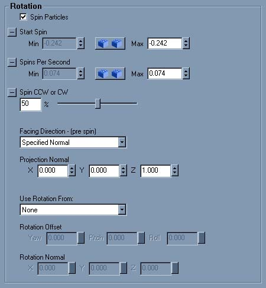
Spin(스핀)
파티클이 이동하는 동안 스핀시키려면 Spin Particles (파티클 스핀)을 체크하고 Spins Per Second (초당 스핀 횟수)에 X-Min과 X-Max 값을 입력합니다. 입력한 값은 1초당 파티클의 텍스처가 스핀하는 횟수입니다. X-Min과 X-Max 값이 다를 경우 각 파티클은 최소값과 최대값 사이에 존재하는 임의의 값을 갖게 됩니다. 또한, Spin CCW or CW 슬라이더를 사용하여 Counter Clock Wise(시계 반대 방향) 또는 Clock Wise(시계 방향)으로 스핀하게 설정할 수 있습니다. 만약 0과 1 사이의 어떤 값으로, 예를 들어 0.7로 설정하면 이것은 즉 파티클 시계 방향으로 회전할 확률은 70%이고 시계 반대 방향으로 회전할 확률은 30%임을 나타냅니다. SpinsPerSecondRange(초당 스핀 범위)가 0.5이고 SpinCCWorCW(시계 반대 방향 또는 시계 방향 스핀)가 1이면 첫 번째 GIF 애니메이션처럼 보여질 것입니다. Spin CCW or CW 를 0.5로 설정하면 두 번째 GIF 애니메이션처럼 보여질 것입니다(두 번째 스크린샷에서 일부 파티클은 갑자기 시계반대 방향에서 시계 방향으로 전환될 수도 있지만 그것은 GIF 애니메이션이 너무 많은 수의 프레임을 필요로 하기에 편의상 그렇게 한 것이기 때문입니다. 편집기에서는 결코 발생하지 않습니다.)

Start Spin(시작 스핀)
Start Spin 을 사용하여 파티클이 스폰될때 파티클의 회전을 설정할 수 있습니다. 각기 다른 Min과 Max 값을 입력한 경우 파티클이 임의의 Start Spin 을 갖게 할 수도 있습니다.Facing Direction(마주하고 있는 방향)
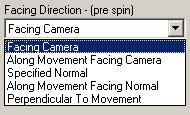
Facing Direction은 월드에서 파티클이 마주하고 있는 방향을 결정합니다. 이 방향은 파티클의 스핀이 계산되어지기전에 계산되어진다는 것을 반드시 기억해야 합니다. 조금이라도 스핀이 있는 경우 facing direction 후에 스핀이 적용되므로 facing direction의 효과를 보기 어렵습니다. 이 도구의 효과를 그림으로 표현하기 위해 중력의 영향을 받는 간단한 파티클 시스템을 만들었습니다. 파티클에서의 텍스처로 아래의 화살표가 사용되었습니다. Facing Direction 설정시 기본값이고 가장 잘 사용되는 방향은 Facing Camera (카메라 마주하기)입니다. 카메라가 어디에 있던지 모든 파티클은 카메라를 향합니다. 이것은 아래의 그림에서 볼 수 있습니다. Facing Camera 에서 혼동하기 쉬운 부분은 텍스처가 세로를 기준으로 뒤집혀진다는 것입니다. 이 설정에 대해 혼동되는 또 다른 사항은 X 크기(Start Size에서)가 X와 Y를 모두 스케일하는데 사용되기 때문에 파티클의 크기가 일정 종횡비를 갖는다는 것입니다. Facing Direction이 Facing Camera 로 설정된 경우에는 Y 크기는 무시됩니다.
Facing Direction 설정시 기본값이고 가장 잘 사용되는 방향은 Facing Camera (카메라 마주하기)입니다. 카메라가 어디에 있던지 모든 파티클은 카메라를 향합니다. 이것은 아래의 그림에서 볼 수 있습니다. Facing Camera 에서 혼동하기 쉬운 부분은 텍스처가 세로를 기준으로 뒤집혀진다는 것입니다. 이 설정에 대해 혼동되는 또 다른 사항은 X 크기(Start Size에서)가 X와 Y를 모두 스케일하는데 사용되기 때문에 파티클의 크기가 일정 종횡비를 갖는다는 것입니다. Facing Direction이 Facing Camera 로 설정된 경우에는 Y 크기는 무시됩니다.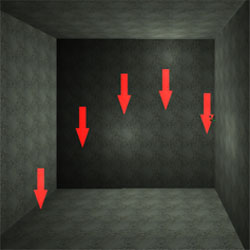
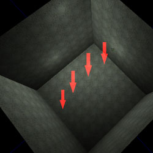
Along Movement Facing Camera (카메라를 마주하는 이동을 따라) 텍스처의 "위"가 항상 파티클이 이동하는 방향을 마주하게 파티클 자체가 방향을 조정합니다. 파티클도 또한 동시에 카메라를 마주하기 위해 최선의 노력을 하지만 파티클이 이동하는 방향을 따라 보고 있는 경우와 같은 어떤 각도에서는 매우 어렵습니다. 다음 2개의 그림이 이 설정의 효과를 보여주고 있습니다.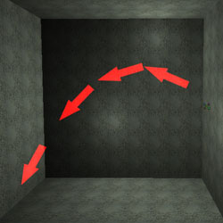
 Specified Normal (지정된 법선)은 매우 간단합니다.파티클 법선은 Projection Normal(투영 법선)에 의해 지정됩니다. 첫 번째 그림의 경우 법선은 똑바로 위를 향합니다(0, 0, 1). 두 번째 그림에서는 (-0.5, 0.3, 1.0)의 법선이 사용되고 있습니다.
Specified Normal (지정된 법선)은 매우 간단합니다.파티클 법선은 Projection Normal(투영 법선)에 의해 지정됩니다. 첫 번째 그림의 경우 법선은 똑바로 위를 향합니다(0, 0, 1). 두 번째 그림에서는 (-0.5, 0.3, 1.0)의 법선이 사용되고 있습니다.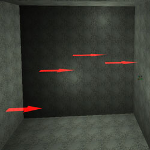
 Along Movement Facing Normal (법선을 마주하는 이동을 따라)은 Along Movement Facing Camera 와 유사하지만 카메라를 마주하는 대신에 파티클은 지정된 Projection Normal(투영 법선)을 마주합니다. 이것은 폭포에서와 같이 파티클이 카메라가 아닌 이동 방향으로 향하고 있는 경우 아주 유용하게 사용됩니다. 이것의 효과는 아래에서 볼 수 있습니다.
Along Movement Facing Normal (법선을 마주하는 이동을 따라)은 Along Movement Facing Camera 와 유사하지만 카메라를 마주하는 대신에 파티클은 지정된 Projection Normal(투영 법선)을 마주합니다. 이것은 폭포에서와 같이 파티클이 카메라가 아닌 이동 방향으로 향하고 있는 경우 아주 유용하게 사용됩니다. 이것의 효과는 아래에서 볼 수 있습니다.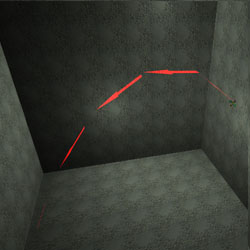
 Perpendicular to Movement (이동 방향에 수직)는 파티클을 이동 방향에 수직으로 향하게 합니다. 이것은 비행중 파티클을 90도 회전시키는 것과 같은 잘못된 부작용을 갖고 있습니다. 이것은 아래의 그림에서 볼 수 있습니다.
Perpendicular to Movement (이동 방향에 수직)는 파티클을 이동 방향에 수직으로 향하게 합니다. 이것은 비행중 파티클을 90도 회전시키는 것과 같은 잘못된 부작용을 갖고 있습니다. 이것은 아래의 그림에서 볼 수 있습니다.
Projection Normal(투영 법선)
이 도구는 활성화되어 Facing Direction의 Specified Normal 과 Along Movement Facing Normal 설정에 사용됩니다.Use Rotation From:(회전 사용)
Use Rotation From 을 사용하여 파티클에 대한 전체 파티클 시스템을 회전시킬 수도 있습니다. 이것은 위치와 속도에 영향을 주지만 가속도에는 영향을 주지 않습니다. Use Rotation From 을 사용하여 회전 방법을 지정할 수 있습니다. None 으로 설정하면 파티클 시스템은 회전되지 않고 예를 들어 X축이 편집기의 메인 X축과 같은 방향으로 향하도록 유발합니다. Use Rotation From 이 Actor 로 설정되면 에미터 액터의 회전이 사용됩니다. Advanced bDirectional을 True로 설정하면 에미터에 화살표가 표시됩니다. 이 화살표의 방향은 속도와 위치에 사용되는 X 축입니다. Use Rotation From 이 Offset 으로 설정되면 Rotation Offset 의 설정이 사용됩니다. 여기에서 파티클 시스템이 피치(Pitch), 요(Yaw), 롤(Roll)하는 정도를 설정할 수 있습니다. Use Rotation From 이 Normal 으로 설정되면 회전에 Rotation Normal 의 설정을 사용할 수 있게 됩니다. 여기에서 평면의 방향을 입력할 수 있고 X축은 입력된 평면에 수직입니다. 예를 들어, 첫 번째 스크린샷에서 Rotation Offset (회전 오프셋)은 사용되지 않았고 파티클은 X = 500 속도로 이동합니다. 두 번째 스크린샷에서는 동일한 속도로 이동하지만 Use Rotation From 은 Offset 으로 설정되었고 Rotation Offset 의 Pitch (피치)는 90도 설정되었습니다.

Revolution(선회)
 Rotation은 개별 파티클의 각 파티클의 중심을 기준으로 회전시키는 것이고 Revolution은 파티클을 공간의 한 고정점을 기준으로 회전시키는 것입니다. Revolution을 사용하면 파티클의 위치가 변경됩니다.
Rotation은 개별 파티클의 각 파티클의 중심을 기준으로 회전시키는 것이고 Revolution은 파티클을 공간의 한 고정점을 기준으로 회전시키는 것입니다. Revolution을 사용하면 파티클의 위치가 변경됩니다.
Use Revolution(선회 사용)
Use Revolution 을 체크하면 선회를 사용할 수 있게 됩니다.Revolution Center Offset(선회 중심 오프셋)
일반적으로 파티클은 파티클 시스템의 중심 주위를 회전합니다. Revolution Center Offset 을 사용하면 파티클 시스템의 중심 이외의 다른 지점을 중심으로 파티클이 회전할 수 있게 됩니다.Revolutions Per Second(초당 선회수)
Revolutions Per Second 은 지정된 축을 기준으로 선회하는 초당 선회수를 지정합니다.Use Revolution Scale(선회 스케일 사용)
Use Revolution Scale 이 True로 설정되었으면 Revolution Scale 을 사용할 수 있게 됩니다.Revolution Scale(선회 스케일)
Revolution Scale 은 Revolutions Per Second 범위의 각 축에 대한 승수로 사용됩니다. Revolution Scale 을 사용하여 파티클의 지속시간 동안에 특정 축의 선회 속도를 증가시키거나 감소시킵니다. 음수를 사용하여 선회 방향을 반대로 전환시킬 수 있습니다.Revolution Scale Repeats(선회 스케일 반복 횟수)
Revolution Scale Repeats 는 Revolution Scale 이 반복되는 횟수입니다. 이것을 0으로 설정하면 선회 스케일은 1번만 발생합니다. 이것을 1으로 설정하면 선회 스케일은 2번 발생합니다.Size(크기)

Uniform Size(일정 크기)
Uniform Size가 True로 설정되면 U와 V 모두에 X만 사용됩니다(또는 메쉬에 X, Y, Z). 화면 비율을 유지하면서 임의의 크기를 사용하는 경우에 이 설정이 필요합니다.Start Size(시작 크기)
Start Size Range (시작 크기 범위)는 스폰될때의 파티클의 크기를 결정합니다. 스프라이트의 경우 Facing Direction이 Facing Camera 이면 X 값만이 유용합니다. Facing Direction 의 모든 다른 설정의 경우 X와 Y는 텍스처의 폭과 높이를 따로 변경하는데 이용될 수 있습니다(단 UniformSize가 False인 경우에만). 메쉬의 경우 X, Y, Z가 사용됩니다(단 UniformSize가 False인 경우에만). 기본값은 100이고 스크린샷은 X(Min) = X(Max) = 50, 및 X(Min) = X(Max) = 150의 경우를 표시하고 있습니다.
 X(Min)과 X(Max)에 다른 값을 입력하면 파티클은 임의의 크기를 갖게 됩니다.
X(Min)과 X(Max)에 다른 값을 입력하면 파티클은 임의의 크기를 갖게 됩니다.

Size Scale(크기 스케일)
Size Scale 은 Color Scale(컬러 스케일)과 비교해서 정확이 동일하게 작동합니다. 단, 색상 대신 크기를 대상으로 작업을 한다는 점이 다른 점입니다. Use Size Scale 을 True로 설정하고 Shrink Particles Exponentially (기하급수적으로 파티클 축소하기)를 True로 설정하면 파티클은 항상 축소하여 SizeScales를 추가할 필요가 없게 됩니다.
Collision(충돌)

Use Actor Forces(액터 forces 사용)
Use Actor Forces 를 사용하면 force 매개 변수 세트를 가진 액터는 파티클에 영향을 미칠 수 있습니다. (어떤 종류의 액터에서나 작동하지만 폰(pawn)의 충돌 속성은 이미 올바르게 설정되어있기 때문에 가장 쉬운 액터입니다.) Force 매개 변수는 액터를 더블 클릭한 다음 Properties 창에서 Force 카테고리를 선택하면 검색할 수 있습니다. ForceType (force 유형)은 반드시 FT_DragAlong 으로 설정되야 하고 ForceScale (force 스케일)은 반드시 0보다 커야 합니다. 큰 효과를 보려면 ForceScale 을 50 이상으로 설정하십시오. ForceRadius (force 반경)은 어떤 것으로든지 설정될 수 있지만 액터의 CollisionRadius (충돌 반경)으로 설정하면 가장 잘 작동합니다. 매개 변수 설정을 완료한 후 이 액터가 해당 액터 시스템의 파티클로 이동하면 액터는 이 파티클들을 이동 방향으로 밀쳐버립니다. 그러나 액터가 파티클 근처에 멈춰고 파티클이 이동하면 파티클은 액터로 향해 이동하고 주의를 선회합니다. 이 효과가 외형적으로는 보기 좋기만 매우 느릴 수 있습니다. 잘 실행되는 경우도 있지만 폰이 약간 움직이는 경우 또는 뷰가 변경되는 경우 모든 파티클의 모션이 다시 계산되는 동안 게임이 몇 초 동안 일시 중지할 수도 있습니다.Use Collision(충돌 사용)
주의: 기본 코드 베이스의 좌표 시스템이 "Relative"로 설정되어 있으면 Collision은 작동하지 않습니다. Collision을 사용하여 파티클이 벽, 바닥, 또는 천장에서 충돌 후 튕겨나오는 것을 현실적으로 만들 수 있습니다. 예를 들어, GIF 애니메이션에서 다음과 같이 표시됩니다.
 Collision을 설정하지 않으면 파티클은 그냥 벽으로 사라지게 됩니다.
Collision을 설정하지 않으면 파티클은 그냥 벽으로 사라지게 됩니다.
 그러나 UseCollision을 True로 설정하면 파티클은 벽에서 튕겨 나오게 됩니다. 벽에 직각으로 충돌하는 경우 첫 번째 스크린샷과 같이 본래 온 장소로 튕겨 나가게 됩니다. 그렇지 않으면 두 번째 스크린샷과 같이 튕겨 나오게 됩니다.
그러나 UseCollision을 True로 설정하면 파티클은 벽에서 튕겨 나오게 됩니다. 벽에 직각으로 충돌하는 경우 첫 번째 스크린샷과 같이 본래 온 장소로 튕겨 나가게 됩니다. 그렇지 않으면 두 번째 스크린샷과 같이 튕겨 나오게 됩니다.
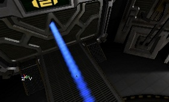
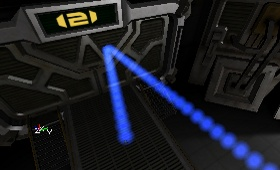
Damping Factor(감쇠 계수)
DampingFactor를 사용하면 파티클이 벽에 튕겨나올때 마다 파티클의 속도가 변경됩니다. Velocity는 이 계수를 곱한 값입니다. 예를 들어, 현실에서 테니스 공을 바닥으로 떨어뜨리면 튕겨져 나올때 마다 그 높이가 줄어듭니다. 다음 스크린샷에서 가속도 Z 는 -950, 속도 X는 500으로 설정되어있습니다. 파티클은 지상을 향해 떨어지고, 그런 다음 튕겨 나옵니다. 각 스크린샷에서 DampingFactor의 Z 값은 그 차이를 보여주기 위해 변경됩니다. 이 경우 파티클은 바닥에서 튕겨져 나오기 때문에 사용되는 것은 Z 값입니다. 첫 번째 스크린샷에서 보여진 것과 같이 DampingFactor가 1인 경우 파티클 지속시간 동안 계속해서 튕겨 나오기를 반복합니다. 1 이하의 값으로, 예를 들어 0.9로 설정하면 지상에서 튕겨져 나올때마다 그 높이가 낮아집니다(이것이 가장 현실적임).
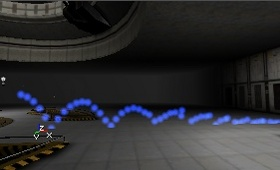
예를 들어 DampingFactor를 1 이상인 1.5로 설정한 경우 파티클은 매번 더 높게 튕겨져 나오게 됩니다(첫 번째 스크린샷). 각기 다른 Min과 Max 값을 부여하면 파티클은 Min과 Max 값 사이의 어떤 임의의 값으로 튕겨져 나오게 됩니다(두 번째 스크린샷).

Rotation Damping Factor(회전 감쇠 계수)
회전 감쇠 계수를 사용하려면 먼저 Use Rotation Damping (회전 감쇠 사용)에 체크 표시를 해야 합니다. Rotation Damping Factor 를 사용하여 회전하는 파티클에 대한 감쇠 계수를 설정할 수 있습니다. 이것은 Collision의 Damping Factor와 유사하게 동일하게 작동하지만 파티클이 매번 튕겨져 나올때마다 파티클의 회전을 느리게 또는 빠르게 만들 수 있는 것이 다른 점입니다. 예를 들어 Rotation Damping Factor 의 Z-Min과 Z-Max 값을 0으로 설정하면 Spins Per Second (초당 스핀 횟수)가 0에 곱해지기 때문에 바닥에서 첫 번째 튕겨져 나온 후 스핀은 멈추게 됩니다. 아래의 스크린샷에서 모든 텍스처는 튕겨져 나온 후 동일한 Rotation을 갖는다는 것에 주의하십시오.
Extent Multiplier(범위 승수)
Extent Multiplier 는 파티클의 Size에 곱해지고 충돌 감지에 사용됩니다. Extent Multiplier가 곱해진 Size는 파티클에서의 충돌하는 쪽이 어디인지 결정하고 그 (보이지 않는) 충돌되는 쪽이 표면에 도달하자마자 파티클은 튕겨져 나옵니다. 0은 파티클의 중앙을 나타내고 1은 파티클의 보통 크기를 나타냅니다. 1 이상의 수인 경우 파티클은 도달하기 전에 튕겨져 나옵니다. 코너를 회전하는 파티클은 Extent Multiplier 가 1인 경우 벽에 맞을 수 있기 때문에 이것은 매우 유용하게 사용됩니다.Collision Planes(충돌 평면)
Use Collision Planes (충돌 평면 사용)를 True로 설정하면 파티클이 튕겨 나오는 보이지 않는 평면을 만들 수 있습니다. 이 평면은 다른 것과는 충돌하지 않고 오직 특정 에미터의 파티클과만 충돌합니다. 이러한 평면은 단면으로 되어 있으므로 어떤 한 방향에서 온 파티클은 평면을 통과할 수 있지만 다른 방향에서 온 경우 튕겨 나옵니다. Collision Planes 설정에서 평면을 만들어야 합니다. 각 평면에 대해 W, X, Y, Z를 입력할 수 있습니다. W는 평면에서 편집기 그리드의 중앙까지의 거리이고, X, Y, Z는 평면의 법선 및 W가 평면을 움직히는 방향을 결정합니다. 예를 들어, 그리드의 다른 측면으로 가거나 또는 한 쪽 방향을 돌아오는 경우 마이너스 값도 입력할 수 있습니다. 아래의 스크린샷에서 빨간 점은 편집기 그리드의 중앙을 나타내고 그리드 자체는 256 단위이고 빨간 선은 (보이지 않는) 평면을 나타냅니다. 작은 빨간 삼각형은 파티클이 평면을 통과할 수 있는 방향을 나타냅니다. 첫 번째 스크린샷은 W=256, X=0, Y=1, Z=0로 설정되어 있습니다. 파티클은 벽에서 튕겨 나올때까지 남쪽으로 갈 수 있고 북쪽으로 다시 갈때 평면에서 다시 튕겨 나옵니다. 두 번째 스크린샷에서는 W는 -256, Y는 -1로 변경되기 때문에 방향이 반대로 되어 파티클은 대신 평면의 다른 쪽에서 튕겨 나오게 됩니다.

Max Collisions(최대 충돌 횟수)
Use Max Collisions (최대 충돌 횟수 사용)를 True로 설정하면 파티클은 lifeTime에 상관 없이 MaxCollosions 에 입력한 (임의의) 횟수만큼 튕겨 나온 후에 소멸합니다.Spawn From Other Emitter(다른 에미터에서부터 스폰)
SpawnFromOtherEmitter를 사용하여 파티클이 튕겨 나오는 위치에 무언가 스폰되어지게 할 수 있습니다. 예를 들어 불꽃이 부딫히는 위치에 발생하는 빛 표시 또는 얕은 물의 잔무결이 있습니다. 이것을 작동하기 위해서는 동일한 에미터 액터내에 두 번째 에미터를 만들고 에미터를 Spawn From Other Emitter 로 지정합니다. 이 새 에미터의 파티클은 튕겨나올때 튕겨진 파티클 위치에 스폰되어지는 것입니다(큰 Extent Multiplier를 가진 경우 튕겨나오는 위치는 미묘한 차이를 보임). 새 에미터의 경우 Respawn Dead Particles(소멸 파티클 재스폰하기) 및 Automatic Spawning(자동 스폰)을 False로 설정합니다. 그렇게 하는 이유는 파티클이 월드의 파티클 시스템 위치에서 잘못된 순간에 스폰될 가능성이 있기 때문입니다. Spawn Amount Range (스폰 양 범위)에 튕겨나오는 파티클이 표면에 부딪힐때 스폰되어지는 파티클의 수를 입력합니다. 무언가 발생하기 위해서는 1이상의 수를 반드시 입력해야 합니다.Spawned Velocity Scale(스폰되어지는 속도 스케일)
Use Spawned Velocity Scale 를 선택하면 튕겨 나올때 스폰되어지는 파티클에 속도를 부여할 수 있게 됩니다. 이 Velocity를 Spawned Velocity Scale 설정에서 정할 수 있습니다. 최대 및 최소 X, Y, Z 설정을 부여할 수 있습니다. 파티클이 튕겨 나오면 스폰되어지는 파티클은 표면의 법선 방향으로만 속도를 갖게 됩니다. 이것을 사용하는 최상의 방법은 X, Y, Z 의 최소 및 최대 값을 모두 동일한 양수로 정의하여 법선 방향으로 이동하게 하는 것입니다(X, Y, Z에 음수를 부여하면 스폰되어지는 파티클은 튕겨 나오는 표면을 향해 이동함). Spawned Velocity Scale은 Facing Direction과 함께 사용하면 아주 효과적입니다. Facing Direction 을 'Perpendicular To Movement'으로 설정하고 스폰되어지는 속도를 아주 작은 값(1.0)으로 설정하면 2차 파티클은 튕겨나오는 표면에 정렬하게 됩니다. 이것은 충격 표시에 아주 효과적으로 사용될 수 있습니다.Sounds(사운드)
 사운드는 파티클이 스폰되고 또한 월드와 충돌할때 재생될 수 있습니다
사운드는 파티클이 스폰되고 또한 월드와 충돌할때 재생될 수 있습니다
Spawning Sound(스폰시 사운드)
스폰시 사운드는 Spawning Sound 를 Don't Use Spawning Sounds (스폰시 사운드 사용 안함) 이외의 다른 모든 것으로 설정하여 활성화시킬 수 있습니다. Spawning Sound 의 다른 옵션은 다음과 같습니다.- Linear Global / Linear Local - 파티클이 스폰되어질때 선형 순서대로 사운드를 재생합니다. 파티클이 스폰되어질때마다 Spawning Sound Index (스폰시 사운드 색인)에 의해 지정된 범위의 Sound Array (사운드 어레이)에 있는 다음 사운드가 재생됩니다.
- Random - Spawning Sound Index 에 의해 지정된 범위의 Sound Array 에 있는 임의의 사운드가 재생됩니다.
Spawning Sound Index(스폰시 사운드 색인)
Spawning Sound Index 는 재생될 사운드의 범위를 선택합니다. Spawning Sound Index 를 사용하여 사운드 범위를 지정할때 Min 과 Max 에 반드시 다른 값을 입력해야 합니다. 만약 동일한 값, 예를 들어 Min=0과 Max=0이 입력되는 경우 Sound Array 에 있는 모든 사운드가 사용됩니다.Spawning Sound Probability(스폰시 사운드 확률)
Spawning Sound Probability 는 스폰시 재생될 사운드 확률에 대한 범위입니다. "왜 확률이 이미 있는데 범위가 필요할까?"라고 의문할지도 모릅니다. 저도 왜 범위가 필요한가라고 의문합니다.Collision Sound(충돌 사운드)
충돌 사운드는 Collision Sound 를 Don't Use Collision Sounds 이외의 다른 모든 것으로 설정하여 활성화시킬 수 있습니다. Collision Sound 의 다른 옵션은 다음과 같습니다.- Linear Global (선형 글로벌) - 파티클의 지속시간에 관계 없이 the Sound Array 에 있는 사운드가 순서대로 반복 재생됩니다. 이것은 파티클별 루프이어서 대량의 파티클이 동시에 스폰되어지고 벽에 충돌하게 되면 모든 파티클이 동일한 충돌 사운드를 재생하게 됩니다.
- Linear Local (선형 로컬) – 각 파티클에 대한 루프는 각 파티클의 지속시간 끝에 다시 재설정되는 것을 제외하고는 Linear Global 과 동일합니다. 이는 즉 Sound Array 가 "보잉!", "보프!", and "쿵!" 사운드를 이 순서대로 가지고 있으면 파티클은 항상 "보잉!" 사운드를 처음 재생합니다. 파티클이 월드와만 2번 충돌하게 된다면 Linear Global 의 경우에서 처럼 파티클이 생성된 후 처음으로 충돌할때에는 "쿵!" 소리를 내지 않습니다.
- Random (랜덤) - Sound Array 에서의 사운드를 임의로 재생합니다.
Collision Sound Index(충돌 사운드 색인)
Collision Sound Index 는 재생될 사운드의 범위를 선택합니다. Collision Sound Index 를 사용하여 사운드 범위를 지정할때 Min 과 Max 에 반드시 다른 값을 입력해야 합니다. 만약 동일한 값, 예를 들어 Min=0과 Max=0이 입력되는 경우 Sound Array 에 있는 모든 사운드가 사용됩니다.Collision Sound Probability(충돌 사운드 확률)
Collision Sound Probability 는 스폰시 재생될 사운드 확률에 대한 범위입니다. "왜 확률이 이미 있는데 범위가 필요할까?"라고 의문할지도 모릅니다. 저도 왜 범위가 필요한가라고 의문합니다.Sound Array(사운드 어레이)
Sound Array 는 Sound (사운드), Radius (반경), Pitch (피치), Volume (볼륨), Probability (확률)을 포함하는 사운드의 어레이입니다.- Sound 를 설정하려면 사운드 브라우저에서 사운드를 선택한 후 Use (사용)을 클릭합니다.
- Radius 는 사운드 반경에 대한 독립 단위로서 Unreal 단위 이외의 단위입니다. 잘 사용되는 반경값은 64가 있습니다.
- Pitch 의 경우 1.0이 기본 피치입니다.
- Volume 설정은 0.0과1.0 사이의 값만 허용합니다. 1.0은 표준 볼륨이고 좀 더 조용하게만 될 수 있습니다.
- Probability 는 사운드를 재생하도록 지시 받은 경우 사운드를 재생할 확률입니다. Spawning Sound Probability(스폰시 사운드 확률) 또는 Collision Sound Probability(충돌 사운드 확률)에 기초하여 사운드 재생이 이루어집니다.
Mesh(메쉬)

Mesh(메쉬)
이것은 Texture(텍스처) 필드와 매우 비슷합니다. 정적 메쉬 브라우저에서 메쉬 에미터로 사용하고 싶은 메쉬를 선택한 다음 Use (사용)을 클릭합니다.Use Mesh Blend Mode(메쉬 블렌드 모드 사용)
이것이 True로 설정된 경우 메쉬의 블렌드 모드가 사용됩니다. 이것은 즉 파티클이 레벨에 로드되어 실행되었을때와 동일하게 보여진다라는 것을 의미합니다. 이것이 False로 설정된 경우 파티클은 Texture 카테고리에 정의된 블렌드 모드를 사용합니다.Render Two Sided(양면 렌더링)
이것이 설정되어 있으면 메쉬는 모든 삼각형을 양면에서 렌더링합니다. 이것은 UseMeshBlendMode가 False인 경우에만 유용합니다.Use Particle Color(파티클 컬러 사용)
이것이 설정되어 있으면 메쉬는 Color/Fading?(컬러/페이드)의 설정을 사용합니다. 이것은 UseMeshBlendMode가 True인 경우에만 유용합니다.Spark(스파크: 불꽃)
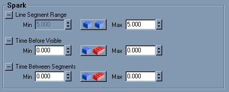
ParticleEmitter는 불꽃을 생성합니다. 예를 들어 용접할 때 볼 수 있는 그러한 불꽃입니다. 이 에미터는 텍스처를 텍스처의 색상을 지닌 얇은 선으로 바꿉니다. Acceleration(가속도) Start Velocity(시작 속도), Start Location(시작 위치)와 같은 설정은 여전히 작동되지만 파티클이 단순한 선이기 때문에 but Collision(충돌), Rotation(회전), Size(크기)와 같은 설정은 작동하지 않습니다. Texture는 여전히 파티클에 색상을 입히는데 사용되지만 단순한 선이기 때문에 텍스트 전체를 볼 수는 없습니다. Color Scale(컬러 스케일)과 Fading(페이드) 같은 것은 작동하지만 이것은 세그먼트당 작동하기 때문에 기대하는 모습을 갖지 못할 수도 있습니다. 아래의 스크린샷에서 임의의 Start Location (시작 위치)와 흰색의 텍스처에 약간의 적색Color Scale(컬러 스케일)이 사용되었습니다. Spark Emitter를 작동시키려면 Sprite 또는 Mesh Emitter를 추가한 것과 동일한 방법으로 스파크 에미터를 추가하여 첫째 Velocity(속도) 또는 Acceleration(가속도)를 부여하고, 그런 다음 Spark 속성으로 이동합니다. 거기서 Time Between Segments(세그먼트 간격)의 Min와 Max 값을 1로 설정하면 에미터가 이미 작동하는 것을 볼 수 있게 됩니다.
Spark Emitter를 작동시키려면 Sprite 또는 Mesh Emitter를 추가한 것과 동일한 방법으로 스파크 에미터를 추가하여 첫째 Velocity(속도) 또는 Acceleration(가속도)를 부여하고, 그런 다음 Spark 속성으로 이동합니다. 거기서 Time Between Segments(세그먼트 간격)의 Min와 Max 값을 1로 설정하면 에미터가 이미 작동하는 것을 볼 수 있게 됩니다.

Line Segment Range(라인 세그먼트 범위)
Line Segments Range 는 불꽃 선 섹션이 얼마나 길 것인가, 또한 가시성의 정도는 얼마나 할 것인가를 결정합니다. 각기 다른 Min과 Max 값을 입력하면 길이가 임의로 선택되어지게 할 수 있습니다. 이것을 너무 높게 설정하거나 너무 낮게 설정하면(다른 설정에 따라 달라짐), Spark Emitter는 작동하지 않게 됩니다. 첫 번째 스크린샷은 Min = Max = 5로 설정되어 있고, 두 번째 스크린샷은 Min = Max = 3으로 설정되어 있습니다. 5로 설정하는 것이 대부분의 경우 가장 적합합니다. 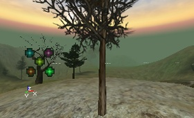
Time Before Visible(보여지기 전까지의 시간)
Time Before Visible Range 는 별로 하는 것이 없어 보입니다.Time Between Segments(세그먼트 간격)
Time Between Segments 의 효과는 어느 정도의 가속도를 사용하여 선이 곡선이 지게 할때 가장 잘 표시됩니다. Time Between Segments Range 는 선을 여러 세그먼트로 분할하는 방법을 정의합니다. 예를 들어 0.1처럼 낮게 설정되면 선이 너무 많이 세그먼트로 분할되어 매끄러운 곡선으로 보입니다(첫 번째 스크린샷). 하지만 0.5와 같이 높게 설정된 경우 선이 여러 세그먼트로 나뉘어지게 됩니다. (두 번째 스크린샷). Time Between Segments 의 값이 높을 수록 파티클의 수가 적어지고 성능이 빨라지지만 시각적으로 별로 좋아보이지는 않습니다.
 Time Between Segments 가 낮을 경우 더 많은 수의 파티클이 만들어져야 하기 때문에(선의 모든 세그먼트는 파티클임) Max Particles(최대 파티클 수)를 매끄럽게 보이기 위해 높은 값으로 설정해야 할 수 있습니다. Max Particles이 매우 높게 설정되면 아래와 같이 것을 제작할 수 있습니다(이번에도 Time Between Segments 가 낮고 높은 두 경우가 적용됨).
Time Between Segments 가 낮을 경우 더 많은 수의 파티클이 만들어져야 하기 때문에(선의 모든 세그먼트는 파티클임) Max Particles(최대 파티클 수)를 매끄럽게 보이기 위해 높은 값으로 설정해야 할 수 있습니다. Max Particles이 매우 높게 설정되면 아래와 같이 것을 제작할 수 있습니다(이번에도 Time Between Segments 가 낮고 높은 두 경우가 적용됨).
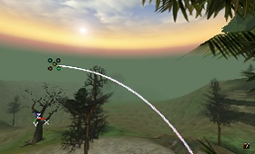
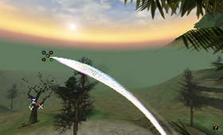
Beam(광선)
 Beam Emitters(광선 에미터)는번개같은 것을 만드는데 매우 유용합니다. 에미터는 선택한 텍스처를 High Frequency Points(고주파 포인트) 및 Low Frequency Points(저주파 포인트)를 사용하여 광선으로 만듭니다. 번개 작업을 하려면 최소한 각각 2개 이상 있어야 합니다. 각 파티클은 광선과 같아 일단 만들어지면 이동되지 않습니다. 번개를 이동하게 하려면 오래된 광선을 소멸시키는 동안 항상 새 광선을 만들거나 컬러 스케일을 사용하여 번개가 깜박이는 것을 만듭니다. 일반적으로 하나의 각이진 선일 뿐이지만 그 선에 가지를 추가할 수 있습니다.
시작하기: 새 광선 에미터를 만들고 모든 설정을 기본값으로 남겨둔 상태에서 몇 가지 Velocity(속도)를 추가하면 무언가를 볼 수 있게 됩니다. 이 광선의 길이는 Velocity 및 Lifetime의 크기에 따라 달라집니다.
Beam Emitters(광선 에미터)는번개같은 것을 만드는데 매우 유용합니다. 에미터는 선택한 텍스처를 High Frequency Points(고주파 포인트) 및 Low Frequency Points(저주파 포인트)를 사용하여 광선으로 만듭니다. 번개 작업을 하려면 최소한 각각 2개 이상 있어야 합니다. 각 파티클은 광선과 같아 일단 만들어지면 이동되지 않습니다. 번개를 이동하게 하려면 오래된 광선을 소멸시키는 동안 항상 새 광선을 만들거나 컬러 스케일을 사용하여 번개가 깜박이는 것을 만듭니다. 일반적으로 하나의 각이진 선일 뿐이지만 그 선에 가지를 추가할 수 있습니다.
시작하기: 새 광선 에미터를 만들고 모든 설정을 기본값으로 남겨둔 상태에서 몇 가지 Velocity(속도)를 추가하면 무언가를 볼 수 있게 됩니다. 이 광선의 길이는 Velocity 및 Lifetime의 크기에 따라 달라집니다.

이 광선에 5개의 색을 가진 반점 텍스처가 있는 것을 볼 수 있을 것입니다. 취향에 따라 더 적합한 텍스처로 변경할 수 있습니다. 다음 예제에서는 사각형과 흰색의 텍스처가 사용되고 있습니다. 번개의 모양을 향상시키려면 적절한 텍스처를 사용하십시오. 번개의 텍스처는 다음과 같이 90도 회전해야 합니다.
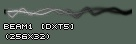
광선의 경우 일부 기본 설정이 흥미로운 방식으로 사용될 수 있습니다. Location(위치)를 사용하여 번개가 다른 장소에서부터 오는 것 처럼 만들 수 있습니다. Start Location Range(시작 위치 범위)를 사용하여 X와 Y의 Min과 Max 값을 입력하여 임의의 시작 지점을 만들 수 있습니다(대부분의 번개가 같은 높이에서 나오기 때문에 번개의 경우 Z는 별로 흥미로운 결과를 이끌어 내지 않습니다.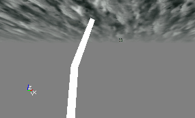
번개가 실제처럼 번쩍이게 만드는 가장 최선의 방법은 [[#ColorScale][컬러 스케일]을 사용하는 것입니다. 그렇게 하면 전체 광선 색이 LifeTime(지속시간)동안 변화하게 됩니다. 다음의 애니메이션 스크린샷에서는 2개(오렌지색 및 노란색) [[#ColorScale][컬러 스케일]이 사용되었고 파티클의 지속시간은 0.6초입니다. 번쩍이는 효과는 또한 페이드 인 and 페이드 아웃을 사용하여 만들 수도 있습니다.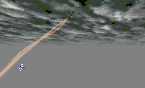
Number of Beam Planes(광선면의 수)
이 옵션은 Beam을 구성하고 있는 평면의 수를 결정합니다. 0과 1은 같은 것, 즉 1개의 면을 의미합니다. 아래의 스크린샷에는 0, 3, 10의 예제가 보여집니다.


Beam Texture Scale(광선 텍스처 스케일)
기본적으로 텍스처는 Beam에 1번만 반복됩니다. Beam에서 BeamTextureUScale을 사용하여 Beam의 길이에 대한 텍스처의 반복 횟수를 설정할 수 있고, BeamTextureVScale을 사용하여 광선의 폭에 대한 텍스처의 반복 횟수를 설정할 수 있습니다. 다음 스크린샷에서는 4번 반복되었습니다.

Determine End Point By(종료 지점 결정)
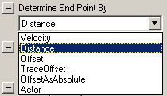
이 속성은 광선의 EndPoint을 결정하는 것을 설정합니다. StartPoint는 Emitter 액터의 위치와 Location에서의 설정에 의해 결정됩니다. 광선에 대한 StartPoints에 대해서는 나중에 더 자세하게 설명됩니다. Velocity 는 기본 설정입니다. 속도가 선택되면 종료 지점이 파티클의 Velocity(속도)와 광선의 Lifetime(지속시간)에 의해 결정됩니다. 광선의 길이는 StartVelocityRange 값 및 파티클의 Lifetime에 의해 결정됩니다. 광선의 방향은 StartVelocityRange의 X, Y, Z 값에 의해 결정됩니다. 임의의 값을 사용할 수 있고, 예를 들어 X(Max) = Y(Max) = Z(Max) =+1000이고 X(Min) = Y(Min) = Z(Min) = -1000이면 각 Beam은 이 범위 사이의 아무 임의의 값이 사용하게 됩니다. 그런 경우 아래의 애니메이션 gif와 동일한 결과를 가져오게 됩니다. MaxParticles가 기본 설정에 의해 10으로 설정되었기 때문에 지금까지는 1개 이상의 Beam을 볼 수 있습니다. 또한, 번개는 일반적으로 지상을 향해 곧장 진행하기에 StartVelocityRange에 마이너스 Z 값만을 사용하는 것이 유용합니다.
Distance (거리)는 Velocity (속도)와 마찬가지로 적용되지만 StartVelocityRange는 광선의 방향만을 결정합니다. 길이는 Beam Distance(광선 거리)를 사용하여 편집기의 단위로 설정됩니다. Offset (오프셋)을 사용하여 상대적 좌표의 EndPoint를 결정할 수 있습니다. BeamEndPoints[0]내의 Offset에 이러한 좌표를 입력해야 합니다. 이를 위해서는 첫째 Beam End Points를 확장하고 Insert 버튼을 누릅니다.

Offset에서 Beam의 EndPoint에 대한 X, Y, Z 좌표 범위를 입력합니다. 이 좌표는 StartPoint(대부분의 경우 이것은 Emitter 액터임)에 상대적이기 때문에, 예를 들어 X = 0, Y = 0, Z = -1000은 EndPoint가 StartPoint의 1000 단위 아래에 있는 것을 의미합니다. 이것이 제대로 작동하려면 0 이상의 Weight를 설정해야 합니다. EndPoint를 임의의 위치로 하고 싶다면 각기 다른 Min과 Max 값을 사용해야 합니다. 추가 Beam End Points 를 추가하면 Beam은 Beam End Points 의 값 중 하나를 임의로 선택하여 사용하게 됩니다. 각 Beam End Point 에 사용되는 확률인 Weight를 지정하여 각 지점의 중요성을 설정할 수 있습니다. 모든 Beam End Points 에 1의 Weight를 지정하면 확률은 동등하게 분할됩니다. Offset X = Y = Z = 0인 경우 EndPoint과 StartPoint는 동일하므로 Beam은 발생하지 않습니다. 이 설정을 사용하여 번개가 몇 번만 내리치고 대부분의 시간에는 안보이게 할 수 있습니다. Beam End Point 에 0 Offset과 높은 Weight을 지정하면 번개는 대부분의 시간 안보이게 됩니다. TraceOffset 은 Offset 과 같은 일은 수행하지만 단단한 표면이 번개 진행 방향에 있으면 실제 종료 지점에 가는 대신 그 단단한 표면에 떨어지게 됩니다. TraceOffset 은 상대 좌표와 함께 사용하면 잘 작동하지 않습니다. OffsetAsAbsolute?_ (절대값으로 오프셋)는 Offset 과 같은 일을 수행하지만 오프셋 범위를 상대적 좌표 대신에 월드 좌표로 해석합니다. 그러므로 X = Y = Z = 0인 경우 광선 종료 지점은 원점이 되겠습니다. Actor 를 사용하여 광성이 특정 액터로 가게 만들 수 있습니다. 이것 또한 [[#BeamEndPoints][Beam End Points]를 사용하지만, 이 경우 Actor Tag 속성(Offset 속성이 아님)에 값을 입력해야 합니다. 번개는 Tag(해당 액터의Event 속성)를 부여한 액터를 향해 진행합니다. 번개가 랜덤으로 각기 다른 액터를 향해 진행하길 원할 경우 추가 Beam End Points 를 추가하고 각 Beam End Points 에 다른 액터 Tag를 입력해야 합니다. 물론 액터에 이런한 Tag들도 부여해야 합니다. 3개의 나무에 동일한 태그를 부여하고 첫 번째 Beam End Point 만을 사용하면 작동하지 않고 번개는 3개의 나무 중 한개에만 내리치게 됩니다. 각기 다른 Beam End Points 를 부여해야 하고 0 이상의 Weight를, 즉 Beam End Point 가 사용될 가능성, 부여해야 합니다. 예를 들어, FullTree, FullTree2, FullTree3 태그를 가진 3개의 나무가 있고 각 나무에 번개가 랜덤으로 내리치게 하고 싶고, 특히 FullTree3가 다른 나무와 비교해서 2배의 번개가 내리칠 확률을 부여하려면 다음 속성을 에미터에 부여해야 합니다.

 만약 액터가 움직인다면 Beam은 따라 이동합니다.
만약 액터가 움직인다면 Beam은 따라 이동합니다.

Beam Distance Range(광선 거리 범위)
이것은 Determine End Point By가 Velocity 로 설정되어 있는 경우 광선의 길이를 결정합니다.Beam End Points(광선 종료 지점)
이것은 Determine End Point By가 Offset, Actor, TraceOffset 로 설정되어 있을때 광선의 여러 종료 지점을 결정합니다.Trigger Actor End Point(트리거 액터 종료 지점)
Trigger Actor End Point 가 True로 설정되어있으면 광선은 해당 액터를 트리거하게 됩니다. 이것은 Determine End Point By가 Actor 로 설정되어있고 Beam End Points 어레이에 유효한 액터 태그가 있을 경우에만 작동합니다. 예를 들어 이것은 번개 낙하 지점에서의 충격 효과를 스폰하는데 사용될 수 있습니다.Beam Noise(광선 노이즈)
 여기서 광속 노이즈를 부여할 수 있습니다. High Frequency Points (고주파 포인트)와 Low Frequency Points (저주파 포인트)를 부여할 수 있습니다. 이 둘이 모두 똑같은 효과를 실행하지만 각각을 독립적으로 사용할 수 있습니다. 예를 들어 몇 개의 큰 밴드안에 다수의 작은 밴드를 번개에 부여할 수 있습니다. 반드시 최소 2개의 High Frequency Points (그리고 2개의 Low Frequency Points )가 있어야 하고 이것은 시작 지점과 종료 지점을 나타냅니다. 이것을 0으로 설정하면 편집기가 크래시하게 됩니다. 1로 설정하게 되면 광선이 없게 됩니다. 2로 설정하는 경우 광선은 항상 곧장 진행해야 합니다. High Frequency Points 가 3(그리고 Low Frequency Points 는 2)이면 광선의 반에 1개의 밴드가 있게 됩니다. 값이 높을수록 밴드의 수가 많아지게 됩니다. 밴드의 크기는 X, Y, Z에 대한 Min 및 Max 값을 High 또는 Low Frequency Noise Range 에 입력하여 결정할 수 있습니다. 이렇게 하면 밴드의 방향 및 크기를 결정할 수 있고 밴드가 랜덤이 되게 만들 수 있습니다. 실제로 반드시 랜덤이 되게 만들어야 합니다. 그렇지 않으면 원하는 효과를 얻을 수 없게 됩니다. 예를 들어, High Frequency Noise Range 에 Y(Max) = 1000 and Y(Min) = -1000이 설정되어 있고 4개의 High Frequency Points 가 있으면 아래의 스크린샷과 같은 모습을 보이게 됩니다. 1개의 파티클은 지속 시간동안 변하지 않으므로 번개가 움직이게 하려면 lifetime을 짧게 설정하여 충분히 빨리 새 파티클이 스폰되어지도록 해야 합니다.
여기서 광속 노이즈를 부여할 수 있습니다. High Frequency Points (고주파 포인트)와 Low Frequency Points (저주파 포인트)를 부여할 수 있습니다. 이 둘이 모두 똑같은 효과를 실행하지만 각각을 독립적으로 사용할 수 있습니다. 예를 들어 몇 개의 큰 밴드안에 다수의 작은 밴드를 번개에 부여할 수 있습니다. 반드시 최소 2개의 High Frequency Points (그리고 2개의 Low Frequency Points )가 있어야 하고 이것은 시작 지점과 종료 지점을 나타냅니다. 이것을 0으로 설정하면 편집기가 크래시하게 됩니다. 1로 설정하게 되면 광선이 없게 됩니다. 2로 설정하는 경우 광선은 항상 곧장 진행해야 합니다. High Frequency Points 가 3(그리고 Low Frequency Points 는 2)이면 광선의 반에 1개의 밴드가 있게 됩니다. 값이 높을수록 밴드의 수가 많아지게 됩니다. 밴드의 크기는 X, Y, Z에 대한 Min 및 Max 값을 High 또는 Low Frequency Noise Range 에 입력하여 결정할 수 있습니다. 이렇게 하면 밴드의 방향 및 크기를 결정할 수 있고 밴드가 랜덤이 되게 만들 수 있습니다. 실제로 반드시 랜덤이 되게 만들어야 합니다. 그렇지 않으면 원하는 효과를 얻을 수 없게 됩니다. 예를 들어, High Frequency Noise Range 에 Y(Max) = 1000 and Y(Min) = -1000이 설정되어 있고 4개의 High Frequency Points 가 있으면 아래의 스크린샷과 같은 모습을 보이게 됩니다. 1개의 파티클은 지속 시간동안 변하지 않으므로 번개가 움직이게 하려면 lifetime을 짧게 설정하여 충분히 빨리 새 파티클이 스폰되어지도록 해야 합니다.
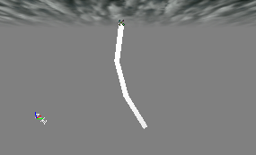
또한 High Frequency Scale_(고주파 스케일)을 만들 수 있습니다. 이것은 Color Scale, Size Scale, 등등과 유사하지만 _High Frequency Scale 만이 광선의 각기 다른 장소에서 High Frequency Noise Range를 결정합니다. 많은 High Frequency Points 를 가진 광선에서 최상의 High Frequency Scale 의 효과를 볼 수 있습니다. 그러므로 이것을 예를 들어 100으로 설정합니다. High Frequency Scale 없이는 전체 광선은 동일한 Noise Range 를 모든 지점에서 갖게 됩니다. High Frequency Scale 을 사용하려면 첫째 Use High Frequency Scale 을 True로 설정하고 난 후 High Frequency Scale 을 Color Scale을 추가했던 것과 동일한 방법, 즉 High Frequency Scale Factors 를 확대한 후 충분한 스케일 계수를 갖게 될때까지 Insert 버튼을 누름을 사용하여 추가합니다. 주파수 스케일에 High Frequency Noise Range (X, Y, Z 별도로)를 곱하고 Relative Length 는 승수가 발생하길 원하는 광선상의 위치를 결정합니다. 100%는 전체 광선의 길이를 나타냅니다. 첫 번째 High Frequency Scale Factor 의 Relative Length 를 70%로 설정하면, Beam의 처음 70%에 High Frequency Scale Factor 의 스케일이 적용되고, 만약 다음 High Frequency Scale Factor 의 Relative Lentgh 를 100%로 설정하면 나머지 30%가 이 Frequency Scale 로 곱해지게 됩니다. 아래의 스크린샷에서는 X, Y, Z의 첫 번째 Frequency Scale 은 1이고, 두 번째 Frequency Scale 은 10입니다.
High Frequency Scale 을 사용하려면 첫째 Use High Frequency Scale 을 True로 설정하고 난 후 High Frequency Scale 을 Color Scale을 추가했던 것과 동일한 방법, 즉 High Frequency Scale Factors 를 확대한 후 충분한 스케일 계수를 갖게 될때까지 Insert 버튼을 누름을 사용하여 추가합니다. 주파수 스케일에 High Frequency Noise Range (X, Y, Z 별도로)를 곱하고 Relative Length 는 승수가 발생하길 원하는 광선상의 위치를 결정합니다. 100%는 전체 광선의 길이를 나타냅니다. 첫 번째 High Frequency Scale Factor 의 Relative Length 를 70%로 설정하면, Beam의 처음 70%에 High Frequency Scale Factor 의 스케일이 적용되고, 만약 다음 High Frequency Scale Factor 의 Relative Lentgh 를 100%로 설정하면 나머지 30%가 이 Frequency Scale 로 곱해지게 됩니다. 아래의 스크린샷에서는 X, Y, Z의 첫 번째 Frequency Scale 은 1이고, 두 번째 Frequency Scale 은 10입니다.

 Color Scale과 기타 다른 스케일에서와 같은 방법으로 High Frequency Scale Repeats 을 사용하여 스케일을 1번 이상 반복할 수 있습니다. 예를 들어, High Frequency Scale Repeats = 2인 경우 다음과 같습니다.
Color Scale과 기타 다른 스케일에서와 같은 방법으로 High Frequency Scale Repeats 을 사용하여 스케일을 1번 이상 반복할 수 있습니다. 예를 들어, High Frequency Scale Repeats = 2인 경우 다음과 같습니다.
 Low Frequency (저주파) 설정은 High Frequency (고주파) 설정과 동일한 작업을 수행합니다. 저주파와 고주파는 각각 독립적으로 작동하고 서로 각각을 “통해” 사용될 수 있습니다. 적은 수의 High Frequency Points와 많은 수의 Low Frequency Points 사용을 예를 들 수 있습니다. 그런 경우 아래의 스크린샷에서 볼 수 있듯이 광선에는 몇 개의 큰 밴드가 있게 되고 동시에 많은 수의 작은 밴드가 있게 됩니다.
Low Frequency (저주파) 설정은 High Frequency (고주파) 설정과 동일한 작업을 수행합니다. 저주파와 고주파는 각각 독립적으로 작동하고 서로 각각을 “통해” 사용될 수 있습니다. 적은 수의 High Frequency Points와 많은 수의 Low Frequency Points 사용을 예를 들 수 있습니다. 그런 경우 아래의 스크린샷에서 볼 수 있듯이 광선에는 몇 개의 큰 밴드가 있게 되고 동시에 많은 수의 작은 밴드가 있게 됩니다.
 NoiseDeterminesEndPoint (종료 지점을 결정하는 노이즈)를 사용하여 광속에 종료 지점에 노이즈를 적용할 수 있습니다. 이것은 대부분의 경우 이미 그렇게 적용됩니다. 그러나 때때로 예를 들어 DetermineEndPointBy 설정이 PTEP_Actor인 경우 종료 지점의 위치는 고정됩니다. 이 경우 종료 지점은 지정된 액터의 중심 지점으로 설정됩니다. 그러나, 이것은 바람직한 효과를 가져오지 못할 수 있습니다. 동일한 위치에 반복해서 번개가 내려치는 것을 보게 되는 좀 이상한 모습을 보일 수 있습니다. 이 박스에 체크 표시를 함으로써 광선은 원하는 액터로 내려치게 되지만 좀 더 임의적, 즉 랜덤 패턴을 보이게 됩니다. 광선이 트리거 가능한 액터에 내려치게 되면 광선이 시각적으로 액터에 내려치지 않더라도 종료 지점을 결정짓게 될 노이즈는 액터가 트리거하는 것을 중지시키지 않습니다. 노이즈 양이 큰 경우 시작적인 문제가 발생할 수 있다는 것에 주의하십시오. 예를 들어, 광선이 나무에 내려치고 불 파티클 시스템을 시작하게 된다고 가정해 보십시오. 그러나 만약 번개가 지상에 내려치게 되고 충격 지점에서 40 피트 떨어진 곳에 있는 나무가 화염에 뒤덥히게 된다면 매우 이상하게 보일 것입니다. 광선상의 노이즈 양을 감소하면 이러한 문제가 수정되게 됩니다.
Dynamic High Frequency Noise(동적 고주파 노이즈)는 광선을 해당 광선의 지속시간 동안에 실제로 이동하게 만드는데 사용됩니다. 이 기능은 위에서 설명된 High Frequency Points 를 사용합니다. 동적 노이즈의 유일한 단점은 광선 에미터의 첫 번째 광선에서만 작동한다는 것입니다. 1개 이상의 광선이 있는 경우 동적 노이느는 추가 광선에 적용되지 않습니다. 고주파 포인트의 움직임은 Dynamic Noise Points Update Time (동적 노이즈 포인트 업데이트 시간)에 의해 결정되는 시간 간격으로 계산됩니다. 광선을 계속해서 업데이트하려는 경우 Dynamic Noise Points Update Time 을 0 또는 아주 작은 숫자로 설정합니다.
각 시간 단계에서 of Dynamic High Frequency Noise Points (동적 고주파 노이즈 포인트)의 최소 및 최대값 사이의 고주파 지점이 Dynamic High Frequency Noise 에 따라 임의의 양만큼 왜곡되게 됩니다.
고주파 포인트는 광선의 첫 번째 인덱스 0에서 시작되어 총 포인트 수에서 1점 적은 지점에서 종료하게 됩니다. 광선에 20개의 고주파 포인트가 있고 Dynamic High Frequency Noise Points 가 0에서 10으로 설정되어 있는 경우 절반의 광선만이 동적으로 움직이게 됩니다.
NoiseDeterminesEndPoint (종료 지점을 결정하는 노이즈)를 사용하여 광속에 종료 지점에 노이즈를 적용할 수 있습니다. 이것은 대부분의 경우 이미 그렇게 적용됩니다. 그러나 때때로 예를 들어 DetermineEndPointBy 설정이 PTEP_Actor인 경우 종료 지점의 위치는 고정됩니다. 이 경우 종료 지점은 지정된 액터의 중심 지점으로 설정됩니다. 그러나, 이것은 바람직한 효과를 가져오지 못할 수 있습니다. 동일한 위치에 반복해서 번개가 내려치는 것을 보게 되는 좀 이상한 모습을 보일 수 있습니다. 이 박스에 체크 표시를 함으로써 광선은 원하는 액터로 내려치게 되지만 좀 더 임의적, 즉 랜덤 패턴을 보이게 됩니다. 광선이 트리거 가능한 액터에 내려치게 되면 광선이 시각적으로 액터에 내려치지 않더라도 종료 지점을 결정짓게 될 노이즈는 액터가 트리거하는 것을 중지시키지 않습니다. 노이즈 양이 큰 경우 시작적인 문제가 발생할 수 있다는 것에 주의하십시오. 예를 들어, 광선이 나무에 내려치고 불 파티클 시스템을 시작하게 된다고 가정해 보십시오. 그러나 만약 번개가 지상에 내려치게 되고 충격 지점에서 40 피트 떨어진 곳에 있는 나무가 화염에 뒤덥히게 된다면 매우 이상하게 보일 것입니다. 광선상의 노이즈 양을 감소하면 이러한 문제가 수정되게 됩니다.
Dynamic High Frequency Noise(동적 고주파 노이즈)는 광선을 해당 광선의 지속시간 동안에 실제로 이동하게 만드는데 사용됩니다. 이 기능은 위에서 설명된 High Frequency Points 를 사용합니다. 동적 노이즈의 유일한 단점은 광선 에미터의 첫 번째 광선에서만 작동한다는 것입니다. 1개 이상의 광선이 있는 경우 동적 노이느는 추가 광선에 적용되지 않습니다. 고주파 포인트의 움직임은 Dynamic Noise Points Update Time (동적 노이즈 포인트 업데이트 시간)에 의해 결정되는 시간 간격으로 계산됩니다. 광선을 계속해서 업데이트하려는 경우 Dynamic Noise Points Update Time 을 0 또는 아주 작은 숫자로 설정합니다.
각 시간 단계에서 of Dynamic High Frequency Noise Points (동적 고주파 노이즈 포인트)의 최소 및 최대값 사이의 고주파 지점이 Dynamic High Frequency Noise 에 따라 임의의 양만큼 왜곡되게 됩니다.
고주파 포인트는 광선의 첫 번째 인덱스 0에서 시작되어 총 포인트 수에서 1점 적은 지점에서 종료하게 됩니다. 광선에 20개의 고주파 포인트가 있고 Dynamic High Frequency Noise Points 가 0에서 10으로 설정되어 있는 경우 절반의 광선만이 동적으로 움직이게 됩니다.
Beam Branching(광선 브랜치)
 멋진 번개 효과를 만들려면 광선에 브랜치를 부여할 수 있습니다. 이것이 올바르게 사용된 경우 아주 멋지고 사실적인 번개 효과를 가질 수 있습니다. 이것은 다음과 같은 방법으로 실행됩니다. 1개 이상의 BeamEmitter(광선 에미터)를 제작합니다(동일한 Emitter내에서). 그런 다음, 첫 번째 BeamEmitter에게 두 번째 BeamEmitter 를 브랜치로 사용하도록 지시합니다. 그런 다음 다시, 2번째 BeamEmitter에게 3번째 광선 에미터를 하위 브랜치로 사용하도록 하고, 이런 식으로 계속해서 반복합니다. Max Particles (최대 파티클 수) 설정은 또한 브랜치의 최대 수를 나타냅니다.
먼저, 여러 광선 에미터를 추가하고 각 에미터에 원하는 속성을 부여합니다. 첫 번째를 크게 설정하고 Max Particles 를 1로 설정합니다. 2번째와 3번째는 브랜치용으로 사용되기에 작게 만듭니다. 이러한 에미터에 큰 Max Particles 를 부여합니다. 예를 들어, 10 또는 25로 설정합니다. 또한, 모든 브랜치에 대해 RespawnDeadParticles(소멸 파티클 재스폰)를 False로 설정합니다. 그렇지 않으면 브랜치가 되는 지점인 새 시작 지점 대신에 에미터의 시작 지점에 브랜치가 스폰되게 됩니다. 또한, 광선 에미터가 브랜치를 갖도록 설정합니다. Beam Noise를 충분하게 설정합니다. 브랜치는 밴드에만 나타나게 되므로 만약 충분한 수의 High Frequency Points가 없으면 분기가 생길 지점이 충분하지 않게 됩니다. 물론 노이즈를 아주 작게 설정하여 눈에 띄지 않게 할 수 있습니다. High Frequency Points의 수만이 중요하고, 그 수가 클 수록 더 좋습니다.
멋진 번개 효과를 만들려면 광선에 브랜치를 부여할 수 있습니다. 이것이 올바르게 사용된 경우 아주 멋지고 사실적인 번개 효과를 가질 수 있습니다. 이것은 다음과 같은 방법으로 실행됩니다. 1개 이상의 BeamEmitter(광선 에미터)를 제작합니다(동일한 Emitter내에서). 그런 다음, 첫 번째 BeamEmitter에게 두 번째 BeamEmitter 를 브랜치로 사용하도록 지시합니다. 그런 다음 다시, 2번째 BeamEmitter에게 3번째 광선 에미터를 하위 브랜치로 사용하도록 하고, 이런 식으로 계속해서 반복합니다. Max Particles (최대 파티클 수) 설정은 또한 브랜치의 최대 수를 나타냅니다.
먼저, 여러 광선 에미터를 추가하고 각 에미터에 원하는 속성을 부여합니다. 첫 번째를 크게 설정하고 Max Particles 를 1로 설정합니다. 2번째와 3번째는 브랜치용으로 사용되기에 작게 만듭니다. 이러한 에미터에 큰 Max Particles 를 부여합니다. 예를 들어, 10 또는 25로 설정합니다. 또한, 모든 브랜치에 대해 RespawnDeadParticles(소멸 파티클 재스폰)를 False로 설정합니다. 그렇지 않으면 브랜치가 되는 지점인 새 시작 지점 대신에 에미터의 시작 지점에 브랜치가 스폰되게 됩니다. 또한, 광선 에미터가 브랜치를 갖도록 설정합니다. Beam Noise를 충분하게 설정합니다. 브랜치는 밴드에만 나타나게 되므로 만약 충분한 수의 High Frequency Points가 없으면 분기가 생길 지점이 충분하지 않게 됩니다. 물론 노이즈를 아주 작게 설정하여 눈에 띄지 않게 할 수 있습니다. High Frequency Points의 수만이 중요하고, 그 수가 클 수록 더 좋습니다.
Use Branching, Branch Emitter(브랜치 만들기 사용, 브랜치 에미터)
다음, 첫 번째 광선 에미터의 Beam Branching 속성으로 이동합니다. Use Branching 을 True로 설정하고 Branch Emitter 를 다른 광선 에미터 중 하나로 설정합니다. 선택한 광선 에미터는 이제 브랜치로 사용될 것입니다.Branch Probabilty(브랜치 확률)
BranchProbability 를 사용하여 브랜치가 나타날 확률을 설정할 수 있습니다. Min과 Max를 모두 1로 설정하면 모든 브랜치가 표시됩니다(이는 즉 Max Particles 에서 설정한 브랜치의 수). Min과 Max을 1로 설정하면 브랜치를 생성하는 에미터의 광선 수에 따라 메인 광선의 상단에만 브랜치가 표시됩니다. 이것은 광선이 스폰될 기회가 있을때마다 스폰되기 때문입니다. Min=0 및 Max=1이면 브랜치는 전체 광선에 걸쳐 나뉘어지고 브랜치는 생성하는 에미터의 모든 광선을 다 사용하지 않을 수 있습니다. 최적의 결과를 얻을려면 이 설정을 가지고 다양한 시도를 해 보아야 합니다.Branch Spawn Amount Range(브랜치 스폰 양 범위)
Branch Spawn Amount Range 에서 Min과 Max가 모두 1보다 커야 합니다. 둘 중 하나를 1보다 작게 설정하면 브랜치가 하나도 생기지 않게 됩니다. Branch Spawn Amount (브랜치 스폰 양)는 각 고주파 지점에 스폰될 광선의 수입니다. 이것이 1이면 각 지점에 최대 1개 브랜치가 생기게 됩니다. 이것이 10인 경우 각 지점에 최대 10개의 브랜치가 생길 수 있습니다.Branch High Frequency Points(브랜치 고주파 포인트)
이것은 광선의 분기가 스폰될 고주파 포인트의 범위입니다. 고주파 포인트는 광선의 원점에서 0으로 시작하는 인덱스가 매겨져 고주파 포인트만큼 인덱스를 차례로 증가하여 부여합니다. 이것의 Max 는 고주파 포인트의 수를 훨씬 넘게 설정될 수 있습니다. 따라서 이 설정에 대해 고민하고 싶지 않으면 Min 을 0으로 Max 를 1000과 같은 아주 큰 수로 설정하십시오.Linkup Lifetime(링크업 지속시간)
Linkup Lifetime 이 False인 경우 큰 광선이 이미 다른곳으로 이동한 후 브랜치만 남게 될 수 있습니다. 이런 경우는 브랜치에 더 큰 lifetime이 설정되었을때 발생합니다. Linkup Lifetime 을 True로 설정하면 브랜치의 지속시간에 관계없이 메인 브랜치가 지속하는 동안 브랜치가 남아있게 되기 때문에 이 문제는 해결됩니다. 단, 브랜치에 대한 Respawn Dead Particles가 False로 설정되었는지 확인해야 합니다. 그렇지 않으면 Linkup Lifetime 이 True일때 브랜치는 잘못된 위치에 스폰되게 됩니다. 예를 들어, 12개의 녹색 브랜치가 스폰될 지점으로 사용될 수 있는 12개의 Low Frequency Points와 60개의 아주 작은 High Frequency Points를 가진 빨간색의 메인 광선이 있습니다. 이제 2번째 광선 에미터(브랜치로 사용되었던)의 Beam Branching 속성에서 같은 설정을 반복할 수 있습니다. 이 에미터에서도 Use Branching를 True로 설정하고 Branch Emitter를 마지막 에미터로 설정합니다. 이렇게 하여 브랜치는 하위 브랜치를 갖게 됩니다. 모든 브랜치 하위 브랜치를 갖게 되는 것은 아니라는 것에 주의하십시오. 특히 상단에 근접한 브랜치는 가장 적게 하위 브랜치를 갖게 됩니다. 하위 브랜치의 Max Particles가 10인 경우 각 브랜치당 10개의 하위 브랜치가 생기는 것이 아니라, 총 10개의 하위 브랜치가 생기게 됩니다. 예를 들어, 아래의 에미터에는 10개의 하위 브랜치(분홍색)가 있습니다.
이제 2번째 광선 에미터(브랜치로 사용되었던)의 Beam Branching 속성에서 같은 설정을 반복할 수 있습니다. 이 에미터에서도 Use Branching를 True로 설정하고 Branch Emitter를 마지막 에미터로 설정합니다. 이렇게 하여 브랜치는 하위 브랜치를 갖게 됩니다. 모든 브랜치 하위 브랜치를 갖게 되는 것은 아니라는 것에 주의하십시오. 특히 상단에 근접한 브랜치는 가장 적게 하위 브랜치를 갖게 됩니다. 하위 브랜치의 Max Particles가 10인 경우 각 브랜치당 10개의 하위 브랜치가 생기는 것이 아니라, 총 10개의 하위 브랜치가 생기게 됩니다. 예를 들어, 아래의 에미터에는 10개의 하위 브랜치(분홍색)가 있습니다.

Trigger(트리거)
 트리거를 사용하여 에미터가 트리거 되었을때 에미터의 패턴을 변경할 수 있습니다. 파티클 시스템의 Tag 를 트리거의 Event 로 설정하여 Unrealed의 다른 모든 것처럼 에미터를 트리거할 수 있습니다. Tag 는 에미터별로 지정되는 것이 아니라 전체 파티클 시스템에 지정되는 것이라는 것에 주의하십시오. 각 에미터에 트리거를 처리하는 각기 다른 방법이 구성될 수 있지만 모든 에미터는 동시에 같은 트리거 이벤트를 수신하게 됩니다.
트리거는 주로 다양한 방법으로 에미터를 선택 및 해제하는데 사용됩니다. 이 트리거 시스템은 에미터를 선택하는 것에 있어 편리한 방법을 제공하지만, 불행히도 에미터의 선택을 취소하는 간단한 방법은 제공하지 않습니다.
트리거를 사용하여 에미터가 트리거 되었을때 에미터의 패턴을 변경할 수 있습니다. 파티클 시스템의 Tag 를 트리거의 Event 로 설정하여 Unrealed의 다른 모든 것처럼 에미터를 트리거할 수 있습니다. Tag 는 에미터별로 지정되는 것이 아니라 전체 파티클 시스템에 지정되는 것이라는 것에 주의하십시오. 각 에미터에 트리거를 처리하는 각기 다른 방법이 구성될 수 있지만 모든 에미터는 동시에 같은 트리거 이벤트를 수신하게 됩니다.
트리거는 주로 다양한 방법으로 에미터를 선택 및 해제하는데 사용됩니다. 이 트리거 시스템은 에미터를 선택하는 것에 있어 편리한 방법을 제공하지만, 불행히도 에미터의 선택을 취소하는 간단한 방법은 제공하지 않습니다.